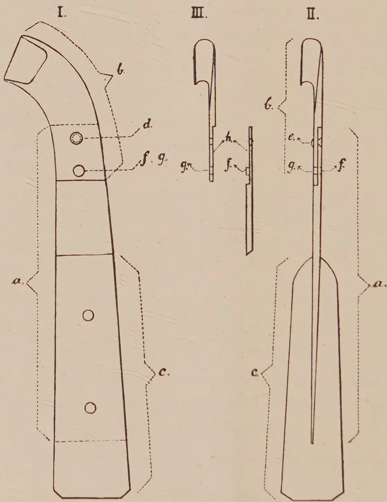
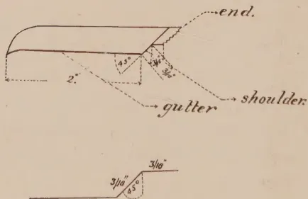
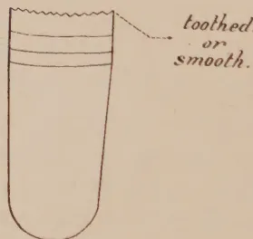

THE
TROPICAL AGRICULTURIST:
JOURNAL OF THE
CEYLON AGRICULTURAL SOCIETY.
VOL. XLVIII.
COLOMBO, JANUARY, 1917.
No. 1.
A PROGRESSIVE POLICY NECESSARY.
The influence of the War has been felt by all tropical agricultural industries. In some cases there have been greatly enhanced prices for products—with correspondingly increased profits. In other cases, industries have been adversely affected.
It is not sufficient, however, only to consider the present. The great economic changes which will be caused by the War will be world-wide in their effects. It is necessary for everyone connected with tropical industries to look to the future. The prosperity of some industries will afford the means to safeguard their future. Those interested in industries which have suffered must also look forward and ascertain whether the depression is only of a temporary nature or whether it is likely to be permanent.
In various tropical industries steps have already been taken to safeguard the future. In the sugar industries of various colonies marked improvements in machinery equipments have been made since the increased profits resulting from the War have supplied the necessary funds. These improvements will enable the tropical sugar industries to produce more effective extraction at a reduced cost, and the better to meet the period of lower prices when production of beet sugar again assumes normal conditions.
In the cacao industries there is room for considerable improvement in appliances for curing and drying, and also in methods of cultivation. The organization of the treatment of diseases and pests may also now be made possible,
2[JANUARY, 1917.For rubber, every endeavour should be made to adopt methods of culture and tapping that encourage permanency. In the handling of latex and the treatment of diseases improvements of organization can be designed.
The present high prices for tea should encourage all interested in the welfare of the industry to adopt those improvements which will tend to help the industry to meet increased competition and lower prices. Attention should also be given to the possibility of improvement of the quality of the tea produced, or of a maintenance of high quality with increased yields.
In the case of coconuts, the industry in the East received a set back soon after the outbreak of War and even now is suffering somewhat from high cost of freight. Profits are still satisfactory and some part of them should be set aside for improved cultural operations and manurial treatments likely to give increased crop production.
Now is the time for every estate individually to outline and to undertake improvements, and for all collectively to co-operate and assist in framing a sound agricultural policy designed to meet the needs of the future.
The requirements of the several important industries of this colony should be closely investigated; the possibility of establishing new industries and of developing new areas closely considered. Plans should be devised as to how the requirements of the colony can best be met. Progressive agricultural policies for the future will be necessary.
There would appear to be an increasing demand for papain. Readers are referred to page 181 of the Journal for March 1915, for information regarding the preparation of this article for the market. Experiments are now in hand at the Experiment Station, Peradeniya, and results in 1915 showed that fruits tapped every ten days give the most satisfactory results.
We are in receipt of a communication from MESSRS. CARTER, CUMMINGS & Co., Toronto, Canada, Manufacturers and Importers of Pharmaceutical Products exclusively for the Medical Profession, intimating that they are very large buyers of dried papaw juice. These correspondents are desirous of obtaining supplies of pure unadulterated dried papaw juice and anyone interested should communicate to them or to the Secretary of the CEYLON AGRICULTURAL SOCIETY.
A large, faint watermark of a classical building, likely a library or museum, is centered on the page. It features a triangular pediment supported by four columns, with a base and a roofline.Digitized by the Internet Archive
in 2025
https://archive.org/details/tropical-agriculturist_1917-01_48_1

The drawing consists of three parts labeled I, II, and III. Part I is a side view of a handle (c) with a curved top section (b) and two rivets (d) near the top. Part II is a side view of a handle (c) with a straight blade (a) and a rivet head (e) near the top. Part III is a cross-sectional view showing the blade (a) passing through the handle (c), with a fixed pin (f) and a hole (g) for the pin. A cut-off surface (h) is also indicated.
IMPROVED TAPPING KNIFE O.K.S.
MR. W. J. GALLAGHER for some time Director of Agriculture, Federated Malay States, has sent the two following notes which will doubtless be of interest to rubber planters in Ceylon:—
The cutting edge is the part which wears away quickly in the ordinary tapping knife, and a tool otherwise but little damaged has to be scrapped because a small part of it is worn away. This was long ago recognised and a number of knives have been invented in which the cutting part is replaceable. These knives are not always simple, sometimes heavy and often costly, but the greatest fault in most of them is, as far as I know, the fact that the coolie can loosen, or tighten, or vary the position of the blade at his will.
Tapping knives in one piece may be, and often are, reforged on the estate, but with the usual estate equipment it is difficult to temper properly the cutting part, and the original shape cannot be maintained.
As everyone knows a change of shape usually means deterioration in quality of tapping. MR. A. BAILEY of the General Rubber Company in Sumatra has designed an improvement in the ordinary one-piece blade.
This modification aims at combining the advantages of the replaceable blade and the one-piece blade. This improved knife has been in use for some time on a large estate. I give some details of it so that if other planters wish they may give it a trial.
The steel blade of the O.K.S. knife consists of two parts, see illustrations I-III; (1) one straight part a is fixed in a wooden or metal handle c in the ordinary way, and (2) the replaceable blade b. The replaceable part is attached firmly to the fixed part by a small rivet, d. To remove the blade the head of this rivet must be cut or filed off, which is an easy process. In order to make the connection firmer the fixed blade, a, is provided with a fixed pin, f, which fits in the hole, g, in the replaceable blade. The surfaces, h, where the blades come in contact, should be made very smooth so that a good joint is obtained.
A handle should be good enough for four or five blades. This will enable the tapper to use for a long time a handle to which he is accustomed. It is well-known that a good tapper frequently reshapes the wooden handle of his knife, and that he taps less satisfactorily when he has to use a new knife.
4[JANUARY, 1917.It is a drawback to the ordinary spout that it can be driven too far into the tree. This the taper too frequently does; the immediate result is an ugly wound, and later a woody excrescence when the wound has healed over.
We may refer to the part which enters the tree as the end. The improved spout, which has been designed by MR. DONALD KNAPP, General Rubber Company, Sumatra, has a shoulder or bend parallel to the end and about inch from it. This may be greater or less, but it should depend on the thickness of the bark in which the spout is to be inserted. The distance mentioned is a good working one, but too great perhaps where thin bark is being tapped. In any case the spout cannot enter the bark to a greater depth than the distance from the end to the beginning of the shoulder.
The shoulder slopes downwards at an angle of 45 degrees, as this is the slope at which spouts are inserted on the estates where the spout is in use. The depth of the shoulder is inch.
fig. 3

Figure 3 is a technical drawing of the improved latex spout. The top part is a side profile showing the 'end' of the spout, which is curved. Below the end is a 'gutter' section, followed by a 'shoulder' section. The shoulder is a horizontal bend. The profile shows a 45-degree angle for the shoulder and a 2-inch depth for the gutter. The bottom part is a cross-section showing a 45-degree angle and a depth of inch.
fig. 2.

Figure 2 is a technical drawing of the spout showing its internal structure. It is a vertical tube with a rounded bottom. The top of the tube is labeled 'toothed or smooth'.
IMPROVED LATEX-SPOUT.
It might be added that in any spout the end should be curved and not straight. The correct depth for the curve depends on (1) the diameter of the tree, (2) the angle which the inserted spout is intended to depart from the horizontal, and (3) the curve of the entire spout itself. If the depth of the end curve is right, the spout will enter the bark to the same depth everywhere and will sit firmly.
JANUARY, 1917.]5From information received from different sections of the country it appears that the volume of general trade continues to be good, but pneumatic tyre manufacturers report a slack business. There is a constant turnover, but it is stated that the restrictions on the use of petrol have, in fact, seriously affected the tyre trade. A great number of automobiles are laid up in garages; even commercial cars in some cases have been idle for months, largely owing to the prohibitive price of gasolene.
Many owners of commercial automobiles are now using city gas instead of gasolene as a fuel for their motors.
The use of gas as a fuel-for automobile gasolene engines is not new, for town gas has long been used by manufacturers for the preliminary testing of their engines, though it will not give the power of gasolene.
The problem was to conveniently carry this city gas on vehicles. At first it was attempted to store it in metal tanks, under pressure, but these were found far too heavy for practical use on motor trucks and, after many tests and experiments, the accepted container now is a double texture canvas bag with rubber insertion, rendering it water and gas tight. This is roped or strapped to the roof of the vehicle and is filled from the gas supply mains. Far from increasing the weight of the vehicle, this rubber-lined gas-bag rather has a tendency to lighten the load on the springs.
While business is slack and competition very keen in the pneumatic tyre trade, the solid tyre industry is working night and day and there is unlimited faith here in this branch of the rubber industry.
Manufacturers of mechanical rubber goods are doing very brisk business and there is no sign of slackness in this line in the near future.
Rubber toy and novelty manufacturers also report excellent orders.
The demand for rubber soles and heels is increasing every day and large manufacturers in this line are well employed. Some small ones, however, are said to be experiencing a trying time, due to the fact that the withdrawal of labour from small works is usually more seriously felt than similar withdrawal from large factories.
Rubber reclaimers continue to suffer from the labour difficulties mentioned in a former communication, but they are nevertheless doing a roaring business and have trouble in promptly meeting orders.
The waterproof garment people are working full time and overtime. They have received large government orders for garments for the soldiers, who are sure to pass another winter in the trenches, and the wet weather we have been experiencing has made a great demand for waterproof garments, both rubberized and chemically treated
6[JANUARY, 1917.Cable and insulated wire manufacturers have all the work they can handle.
Demands for all kinds of surgical rubber and other hospital appliances are increasing daily.
The British Rubber Tyre Manufacturers' Association, Limited, is the name of an organization recently formed "to watch over, protect and advance" the interests of British tyre manufacturers.
To qualify for membership, a tyre manufacturer must have his principal works in the United Kingdom and his tyre sales must be to the extent of at least 90 per cent. manufactured in Great Britain. Companies whose capital is to the extent of 25 per cent. or more held, directly or indirectly, by individuals resident outside the limits of the British Empire, will be barred from membership.
Dealers in rubber tyres may become members of this association provided the sale of tyres is their principal business though, even then, their admission to membership is discretionary with the general committee of the association. Rubber manufacturers whose works are situated in any British colony, dependency, or self-governed dominion are also eligible for membership at the discretion of the general committee.—INDIA RUBBER WORLD.
It might be urged that the chemical characteristics of synthetic rubber are of relatively little importance if the material fulfils all the needs of the manufacturer, and this is undoubtedly the correct view to take. Up to the present, however, the quantities of synthetic rubber produced have been so small as not to admit of a comparison being made with the natural material on anything like a satisfactory scale. The Rubber manufacturer knows too well that a substance which might truthfully be called a "tough elastic mass" or "caoutchouc-like body" need not necessarily be as good in every way as the product of the plantations in the East.
A glance through one or two specifications to which various rubber articles must conform would quickly convince the reader that a product destined to replace caoutchouc for all purposes must possess properties of a very varied character.
Even if a synthetic body were obtained which could be said to compare favourably with the natural article, the price would obviously become a determining factor in the chance of success; it is here that an industrial process would encounter almost insuperable difficulties. At the time when chemists began to turn their attention towards synthetic rubber the price of this commodity was abnormally high, reaching as much as 12s. 6d. per lb. in 1910. Since then, however, there has been a steady fall, reaching as low as 2s. 4d. per lb. in 1915. This is accounted for by the plantations coming into bearing, the products thereof occupying a very prominent place in the world's markets. The recent growth of the plantation industry, and the very different conditions which a synthetic product has now to face compared
JANUARY, 1917.]7with those obtaining in quite recent years, can be seen at a glance from the following tables:—
PLANTATIONS—AREA UNDER RUBBER.
| Ceylon. | Malaya. | |||
|---|---|---|---|---|
| 1901 | ... | ... | 2,500 acres | Nil |
| 1912 | ... | ... | 230,000 " | 621,621 acres. |
TONS OF PLANTATION RUBBER EXPORTED
| Ceylon. | Malaya. | |||
|---|---|---|---|---|
| 1904 | ... | ... | 35 tons | Nil |
| 1912 | ... | ... | 6,697 " | 18,956 tons. |
WORLD'S SUPPLY OF PLANTATION RUBBER.
| 1912 | ... | ... | ... | 28,500 tons. |
| 1915 | ... | ... | ... | 98,000 " |
The rapid strides which have been made in the cultivation of rubber will thus be evident, and as there is every prospect of the yields increasing for some time to come this is bound to react on the price, and it is generally assumed that unless a synthetic product can be put on the market at about 1s. 3d. per lb. there is little hope of the natural material being superseded.
As chemists, perhaps, it would be gratifying to know that another triumph had been won in the industrial field, but whatever the outcome may be, it is well to remember that the chief factor militating against success is the result of scientific energy expended in other directions, that is to say, in raising the product of the plantation to the highest pitch of perfection.—JOUR. OF THE SOC. OF CHEM. INDUSTRY.
PLANTATION RUBBER IN COCHIN CHINA.
LAWRENCE P. BRIGGS.
• (Continued from page 350, Vol. XLVII.)
CARE OF THE PLANTATION: DRAINAGE, CULTIVATION, IRRIGATION, FERTILIZATION.
The question of drainage is sometimes an important one in Cochin China; for the whole delta region is subject to inundations from July to November, while in some parts of Cochin China the rainfall from May to October, inclusive, averages over 20 inches per month, and during some months it is sometimes as great as 30 inches. Up to the present time no precautions have been found necessary against the invasion of the waters of the Mekong and other waters coming from lower levels, and it is unlikely that any such precautions will ever be necessary, because most of the good rubber lands are somewhat higher than the flooded delta district. But it has been found necessary on nearly all these plantations to provide ditches and sometimes large reservoirs for the drainage of excessive rainfall or the overflow of neighbouring streams during the long, wet season.
The soil between the trees is kept soft by ploughing and kept clean by constant weeding. The larger plantations have steam ploughs of 60 to 100 horse-power but the smaller ones use native wooden ploughs or ordinary American steel ploughs drawn by native cattle or carabao. The weeding is generally done by hand.
The dryness of the months from November to April, and especially from January to March, makes irrigation necessary on nearly all the rubber plantations of Cochin China. The rainfall during these months averages as low as
8[JANUARY, 1917.2 inches per month. Sometimes there are months with no rain, but this is not common; and the uniformly cool nights during this season combined with the always humid tropical atmosphere provide a little moisture by condensation. Water can often be stored during the rainy season. At any rate, streams are abundant and under-ground veins are everywhere near the surface. Ditches and reservoirs, useful for both drainage and irrigation, are found on practically all the rubber plantations. A few of the smaller plantations employ stationary hand-pumps or movable double-balance, two-cylinder, suction drainage pumps of 4,000 or 5,000 gallons capacity per hour. On the larger plantations the type of pump most in use is a mounted centrifugal, gas or petroleum motor pump of 10,000 to 50,000 gallons per hour. The type and make of pump used varies with conditions, but Worthington pumps of various styles find a comparatively good sale.
Up to the present time the use of fertilizer has been very small and practically confined to some of the older gray soil plantations and the nurseries. The substances used have been stable manure, oil cake, malt, azote, potash, phosphates and superphosphates. On the red soil plantations nothing but stable manure has been used. The larger plantations have small herds of cattle and employ the manure in the nursery and around the roots of the young trees. The time will undoubtedly come when the use of a small amount of fertilizer will be necessary to supply the lacking soil constituents discussed in a previous paragraph of this report.
As has been stated in a preceding paragraph, the principal enemies of a rubber tree in Indo-China are water, drought and typhoons. This region seems to be singularly free of rubber diseases. The long, dry season has its drawbacks, but it seems to insure the trees against mould and similar maladies common to other rubber regions of the more tropical Orient. There has never been even a slight epidemic of any kind in the rubber region of Indo-China.
At first seeds and even plants were imported into Cochin China from Ceylon, Singapore and Java; but the presence of cryptogamic diseases in the rubber trees of these districts, led to a decree in 1910, prohibiting the importation of Hevea plants into Indo-China and providing for the disinfection of imported seeds. Since that time new plantations have generally purchased their initial plants or seeds of the Belland, Ong-Yem and other earlier plantations.
Secondary cultures do not yet form an important element in the rubber plantations of Cochin China. A little rice and sometimes maize is raised for the employees and the stock, and a certain amount of land is devoted to pasturage. The amount of land given over to these purposes will necessarily increase when land is worn and the need for fertilization with stable manure or by turning under a crop becomes more pressing. Coconuts and other native fruits are often raised, especially on the small native plantations. The Loc Ninh plantation has about 300,000 coffee plants, the Xa-cam plantation about 115,000, and the Delignon plantations in Annam about 125,000, and other plantations a smaller number, making in all about 550,000 coffee plants. A small plantation in Cochin China has about 11,000 cashew trees, one in Annam about 10,000 kapok plants and another raises annually several hectares of Soya beans.
JANUARY, 1917.]9The cultivation of these secondary cultures in connection with that of rubber demands a variety of agricultural implements. The smaller plantations use native hand-made ploughs, harrows, hoes, spades, etc., but the larger plantations use modern machinery, such as traction ploughs, harrows, rollers, trucks and mowing machines. The motive power is sometimes native cattle and carabao and sometimes steam. With the development of this industry, both intensively and extensively, there will come a greater demand for agricultural machinery.
Agricultural machinery is sometimes purchased in France by the Paris representative of the plantation, but it is generally bought of local importers. In either case it is imported from France, although much of the machinery is of American origin. The leading Saigon importers and dealers are DESCOURS, CABAUD ET CIE, GRAF, JACQUE ET CIE, and BONNEFOY FRERES. The directors of these firms are also directors of large rubber estates in Cochin China.
The rubber trees of the gray soil plantations are generally tapped at the age of five or six years. By this time they have attained a height of 15 or 20 feet and a circumference of about 18 inches. On some of the red soil plantations the trees reach this size during the fourth year and are tapped at this age. The half-herringbone method is almost universally employed. The trunk is usually divided into fifths and two of these parts tapped at once over an up-and-down extent of about 20 or 30 inches per year. The tapping is generally done every day—except during the months of January and February—the middle of the dry season, when the trees are given a rest.
The table given below shows the volume in cubic centimetres of latex produced each month by groups of selected trees on the experimental station at Ong-Yem during 1910:—
| Month. | 10 Trees. | 20 Trees. | 42 Trees. |
|---|---|---|---|
| January cubic centimetres ... | 1,713 | 895 | Not tapped |
| February ... .. | 1,253 | 4,159 | Not tapped |
| March ... .. | 1,520 | 9,821 | 3,865 |
| April ... .. | 1,740 | 8,962 | 15,225 |
| May ... .. | 1,557 | 9,034 | 15,110 |
| June ... .. | 5,595 | 9,720 | 14,138 |
| July ... .. | 4,795 | 7,680 | 11,585 |
| August ... .. | 7,194 | 11,073 | 12,330 |
| September ... .. | 5,635 | 12,312 | 11,586 |
| October ... .. | 7,632 | 10,164 | 12,593 |
| November ... .. | 7,730 | 12,513 | 11,892 |
| December ... .. | 7,439 | 9,010 | 12,962 |
Experiments made at the same time show that the weight per cubic centimetre of the latex is a little greater during the season of heavy production but that it contains smaller percentage of rubber than during the dry season. The density of this latex varied from '88 to '98 grams per cubic centimetre, the amount of dry rubber produced per gram of latex varied from '30 to '72 grams. Making due allowance for unusual conditions, these tables give a fair composite picture of the relative productivity of the different seasons of the year.
10[JANUARY, 1917.The latex is gathered daily. A native can tap from 300 to 400 trees a day and gather latex from about an equal number. At the Suzannah plantation, where native labour is very efficient, the director hopes to bring this amount up to 600 trees per man and 450 trees per woman.
Since the beginning of rubber cultivation in Cochin China the average annual rubber production per tree has been about three-quarters of a kilo; but the old Belland plantation claims an average of kilos for 1915, and some portions of the newer plantations are said to average over a kilo per tree. As the above tables will show, selected groups of trees at Ong-Yem have produced over 5 kilos each per year.
In considering these figures it must be borne in mind that up to the present time most of the trees tapped each year are new and that the trees have been planted too close together to obtain the best results.
The methods of preparation vary slightly on the different plantations. The first step is to strain the latex. To prevent the too rapid coagulation a little water is sometimes placed in the receptacles in which it is collected. The latex is strained through a fine sieve, which collects all the leaves and other impurities, and is then placed in porcelain-lined basins about 8 by 12 inches and 3 or 4 inches deep and allowed to coagulate. Sometimes a solution of acetic acid is added to assist the coagulation.
The coagulated mass is then passed several times through one or more sets of rollers until it is pressed into thin sheets. Some plantations have a heavy set of smooth rollers which merely press the rubber into sheets and smaller rollers which impress a design upon them. The rollers are generally of steel or zinc. One of the leading plantations has employed copper rollers, but is considering a change due to the objections of prospective purchasers of the product. When finished the sheets are about 11 or 12 inches wide, 20 to 24 inches long, and to inch in thickness. These sheets are then taken to the drying room.
The straining of the latex, the lumps found on straining, the water left in the cups, basins and other receptacles and the foam and other skimmings after straining are prepared into various grades of rubber and "scraps."
The rubber is sometimes dried by natural air in a closed room, sometimes dried with hot air and sometimes simply exposed in a dry place to the tropical atmosphere. The first of these methods is followed at Xatrach, the second at Suzannah, and the third at the Belland plantations and in general at all the smaller plantations.
The Suzannah plantation has a $14,000 drying plant, consisting of an "Ouragan" mechanical drier operated by a 75 horse-power motor. The rubber produced on this plantation is ready for market within ten or twelve days after leaving the tree, while on other plantations of Cochin China the preparation of the rubber requires from twenty to thirty days, according to the season.
Some plantations smoke the sheet rubber in the closed room by conducting wood-smoke into the room through a pipe; others by the addition of a little creosote to the latex.—INDIA RUBBER WORLD.
JANUARY, 1917.]11We do not think anyone conversant with plant sanitation in the tropics can say they are in any way satisfied with the present position of affairs. Every report from the East indicates that not only is canker existent over considerable acreages, but that Fomes, pink disease, and Ustulina, together with white ants, are taking their toll on an unwholesome scale. Canker on the stem means stopping tapping; pink disease means the same or malformation; and the root diseases usually entail entire destruction of the trees affected. The white ant pest is the only one which shows signs of abating; this is a natural consequence of the disappearance of timber from most properties. We have, nevertheless, no hesitation in stating that diseases caused by fungi are on the increase, and that if more prompt measures are not taken the plantations will be thinned out to an extent and in a manner most undesirable.
We do not wish to scare anyone, but we are satisfied that the present methods are not effective, and that if improvement is not shown at an early date there will be serious financial loss to face. We know the difficulties in the way consequent on the increased acreage to be tapped, the lessened supply of coolies, the inadequate staff of European managers (especially in British possessions), and the impossible task set before a mere handful of mycologists and entomologists. All must realise that diseases increase at an alarming rate if not persistently fought, and that the longer such work is delayed on any one estate the more they flourish on the neglected property, and also on neighbouring plantations.
Legal steps are taken against any person found guilty of importing affected seeds or plants, but we have yet to learn of similar action being taken against planters who refuse to fight plant diseases until all the trees are being tapped. Crop is essential, but we can readily conceive of conditions under which insistence on harvesting may mean disaster. It is obviously sheer folly to refuse labour and supervision for the suppression of diseases which will kill the trees, on the excuse that crop for the time being has first call on all labour.
The conditions necessary for the rapid spreading of diseases among animals are recognised among all Europeans, and no wise person would ever dare to suggest that the outturn of manufactured goods must be kept up irrespective of the health of labour. In those parts of the tropics where Hevea is being cultivated the conditions are growing more unhealthy, for the rubber trees, day by day. Where one tree was affected a year ago, many are attacked to-day. Old trees have been tapped continuously, and their energy is being used up in the production of renewed bark, as well as healing wounds caused by pests, diseases and bad tapping. Old plantations are becoming still more overcrowded, and young properties which a couple of years ago admitted plenty of light and air are now densely shaded. Acreages have been increased, and vast areas, without a break, are under the same cultivation, Hevea brasiliensis. The larger the acreage under the same product the more favourable become the conditions for the spread of diseases common to that particular plant.
Our contention is that we are not training sufficient men to deal with pests and diseases; neither are we providing the necessary funds for such
12[JANUARY, 1917.work It is no part of the duty of a chemist to attend to Fomes, and we do not attach any blame to the few experts in plant sanitation for the present state of affairs. We want more money to be devoted to the training of scientific officers to deal with pests and diseases. We see no reason why one disease alone should not occupy the whole time of special officers in different districts. More marked specialisation would lead to better work. We are quite convinced that Ustulina—the latest root disease to compete with Fomes—would take up the time of many mycologists in India, Ceylon, Malaya, Sumatra, and Java. Canker on the stem, Fomes, pink disease, die-back and each of the other very serious diseases, call for similar specialisation. We are quite aware that some directors, not gifted with foresight or intelligence, will oppose our suggestion on the ground of expense. In fact, we know many who regard all such work as scientific amusement, and who fail to grasp the enormous change effected by the establishment of huge contiguous areas of Hevea, and the favourable environment which such tracts offer to serious pests and diseases. We would most strongly urge all opponents to study the steps which have been found necessary with coffee, tea, and coconuts—cultivations which are not on the same footing individually as the rubber plantation industry.—INDIA RUBBER JOURNAL.
The Department of Agriculture of British Burma has published a most interesting bulletin on "Black Thread Disease of Hevea in Burma," [known in Ceylon as Bark Rot] by I. F. DASTUR, First Assistant Imperial Mycologist at Pusa, Burma.
The naked tissues laid bare by tapping become disfigured and damaged by the appearance of vertical, slightly depressed black lines. These follow the tapping cut as it is continued down the trunk of the tree and extend through the cambium into the wood. The blackening of the tissues runs along the tapped area and eventually covers the whole cut. Diseased areas soon become vertically cracked, especially in wet weather. From the vertical cracks latex occasionally exudes. In some cases there is a thick wad of coagulated latex between the diseased renewing bark and the wood; in these cases the cambium is completely destroyed and there is always a bulging out of the diseased renewing bark. This soon decays, leaving behind a gaping wound, exposing the wood. A true "canker" is thus formed. It is the damage to the cambium which constitutes the most serious feature of the disease, for it is upon the activity of this tissue that the tree depends for the smooth and even regeneration of the bark cut away during tapping.
Careful inoculation experiments conducted by MR. DASTUR, with pure cultures, have proved that this disease is caused by the same fungus, a species of Phylophthora, which attacks fruits and causes them to rot, and to which certain experts have attributed the cause of abnormal leaf-fall. Inoculation experiments on tapping cuts, renewing bark and old bark showed that the fungus was capable of attacking the tree only through wounds. Inoculations made on uninjured parts of the stem and branches invariably failed, while those on the wounded surface were successful.
JANUARY, 1917.]13The disease first makes its appearance soon after the rains set in, and completely disappears after the close of the wet season. Even during the monsoon, the progress of the disease is checked during a long break. The annual recurrence of the disease on the stem has not been found to originate from the infected areas of the previous year, but has been observed to be due to fresh infection. On an infected area the disease spreads downward, following the tapping cut; if tapping is stopped the spreading of the disease is stopped. This is what would be expected from the discovery that the trouble is caused by a parasitic fungus. The fungus, however, lies dormant when tapping is stopped during the monsoon, and resumes its activity when tapping is recommenced any time during the rainy period.
The fungus spreads most rapidly in wet weather, and it is pointed out that closely planted trees, which create a dark, moist atmosphere, favour the disease. This leads the author to suggest that one of the best methods of control is to thin out the trees so as to let in more light and air. The application of fungicides, like Burgundy Mixture, was a failure, though a 20 per cent. solution of carbolinum is said to have been a success in Java. Cessation of tapping at the first appearance of the disease, and collection and destruction of all diseased fruits, are recommended by the author as practical means of control. The latter is, however, a difficult procedure in rubber estate practice and requires much labour.
Commenting on this report, the PLANTERS' CHRONICLE says that in South India it has been found that a combination of cessation of tapping on attacked trees, with the application of a thin smear of a mixture of tar and tallow applied to the diseased spot, has proved very effective. The mixture is applied with the finger and then rubbed with a small piece of gunny cloth, so as to confine the smear to the bark area attacked. Its action appears to be two-fold. The tar acts as an antiseptic, while the tallow forms a water-proof covering and thus deprives the fungus of the moisture so necessary for its growth and welfare.—THE INDIA RUBBER WORLD.
MR. B. J. EATON, contributes the following to the F. M. S. Department's Journal for July:—
Enquiries have been received re the use of Chinese vinegar as a coagulant, samples of this substance were purchased on the local market in Kuala Lumpur, and have been investigated in the Chemical laboratory.
Chinese vinegar like English and other continental vinegars consists essentially of a dilute solution of acetic acid, but whereas the English malt vinegar is brown, Chinese vinegar is colourless. Chinese vinegar is probably prepared by the acetic fermentation of alcohol from rice, hence its colourless nature.
The following results were obtained on analysis of samples purchased from different Chinese shops in Kuala Lumpur. The price per gallon of pure acetic acid calculated on the acid content of the samples examined is also given; this has been calculated from the amount of Chinese vinegar bought for 10c., and based on the strength of the samples. These prices are approximate, since larger quantities of the vinegar could no doubt be purchased more cheaply. It is practically certain however, that if a demand
14[JANUARY, 1917.arose for this vinegar as a coagulant, the price would increase considerably. It will be seen that the prices do not compare at all favourably even with present ruling prices of glacial acetic acid, at, say, $45 per demijohn ( gallons approx.) which is equivalent to about $10 per gallon. No coagulations have yet been made by me with this vinegar, but it may safely be stated that its coagulating power will be similar to acetic acid of a similar strength, and that the rubber coagulated with it will be similar to acetic acid coagulated rubbers.
| Ref No. | Amount purchased for 10c. | Acetic Acid per cent. | Cost per gallon calculated for pure acetic acid. |
|---|---|---|---|
| 1 | 17 fl. oz. | 2.6 | $36.20 |
| 2 | " | 5.6 | 17.31 |
| 3 | " | 4.05 | 17.55 |
| 4 | 18 " | 6.2 | 14.33 |
| 5 | " | 4.8 | 21.38 |
| 6 | 16 " | 3.9 | 25.64 |
| 7 | 18 " | 4.2 | 22.49 |
—AGRIC. NEWS, WEST INDIES.
The average girth of the Para trees for the present year works out at 15 inches, as compared with 12 inches for the previous year, but there are still a large number of trees below the tapping size.
The table below indicates the progress made in the growth since date of planting, but does not perhaps fully represent the total improvement in the trees during the period under review, as most of them have thickened out considerably below the three feet measurement and have also added largely to their leaf system, which should be greatly in favour of the general building up of the trees.
The increases are put down to the nearest simple fraction.
Planted May, 1910, 20 in. × 18 in.
| No. of Measurement. | Date of Measurement. | No. of Months in interval. | Average Girth. | Average increase. | Rainfall during interval. | Yearly Average increase. | REMARKS. |
|---|---|---|---|---|---|---|---|
| 1st | March, 1912 | 7 | in. | ... | 36.66 in. | Inter-cropped from date of planting and during this period with Coffea arabica. Uprooted October, 1913. | |
| 2nd | Sept. 1912 | 11 | in. | in. | 49.25 in. | years | |
| 3rd | Aug. 1913 | 5 | in. | in. | 15.66 in. | in. | |
| 4th | Jan. 1914 | 5 | in. | in. | 31.96 in. | years | |
| 5th | Aug. 1914 | 7 | in. | in. | 19.79 in. | 3 in. | |
| 6th | Jan. 1915 | 5 | 12 in. | in. | 26.53 in. | years | |
| 7th | Aug. 1915 | 7 | in. | in. | 20.73 in. | in. | Dug over and clean weeded for the greater part of this period. |
| 8th | Jan. 1916 | 5 | 15 in. | in. |
—ANN. REPT., DEPT. OF AGRIC., UGANDA PROTECTORATE, 1915—16.
JANUARY, 1917.]15The practice has been followed in former reports of dividing the experiments into series, and of discussing the results of each separately. The length of time during which three of these series of experiments have now been conducted is such that reliable information is available, and there is no further need to keep them separate. In this year's report they are regarded as one. The fourth series comprise plots started in 1913-14, and as the experiments are of recent date, no attempt is made to draw definite conclusions therefrom. It is hoped that the system adopted of presenting the results on this occasion will simplify matters and make it easier for those interested to follow the results obtained.
The first seven plots are situated on level ground and occupy approximately 2 acres. The soil is moderately even in character, especially that of plots 1, 2, 3, 6 and 7. Plots 4 and 5 being on a lower level are rather heavier; plot 4 being distinctly so.
Plots 8 and 9 are situated on a steep hillside, a situation typical of many acres of cultivation in Dominica.
The first five plots were started in the year 1902-3, and similar treatment has been accorded to each plot in every succeeding year, so that at the present time the condition of each represents the accumulated results of fourteen years' continuous treatment on the same lines. The remaining four plots were started five years later, and each individual plot has thus obtained identical treatment for nine years.
The following table shows the number of trees per plot and per acre at the present time, the area of each plot, the manurial treatment received, and the year of the first application of the manure:—
| No. of trees per plot, 1916. | Area of plots in acres. | Manurial treatment. | Year of first application | |
|---|---|---|---|---|
| Bearing | Non-bearing. | |||
| 54 | 15 | 0.28 | No manure. | 1902-3 |
| 60 | 6 | 0.29 | Basic slag ... 4 cwt. per acre | " |
| 66 | 5 | 0.36 | Sulphate of Potash 1½ " " | " |
| Dried Blood ... 4 " " | " | |||
| 42 | 6 | 0.29 | Basic slag ... 4 " " | " |
| Dried blood ... 4 " " | " | |||
| Sulphate of Potash 1½ " " | " | |||
| 49 | 4 | 0.37 | Mulched with grass and leaves 5 tons per acre. | " |
| 49 | 6 | 0.25 | Mulched with grass and leaves 4 tons per acre. | 1907 |
| 50 | 3 | 0.25 | Cotton-seed meal 600 lb. per acre | " |
| 86 | 2 | 0.414 | No manure. | " |
| 88 | 1 | 0.373 | Mulched with grass and leaves 5 tons per acre. | " |
| 106 | — | 0.4 | Mulched with grass and leaves 2½ tons per acre. | 1913 |
| 95 | — | 0.25 | Lime 5 cwt. " " | " |
| Calcium cyanamide (Nitrolim) 2½ cwt. per acre. | " | |||
Some years ago the plan was adopted of planting on each plot a sufficient number of trees to cover the ground, and the figure given represents the number of bearing trees in each plot at the present time. In several plots a number of trees have recently died, especially in the control plot 1, there being no fewer than fifteen non-bearing trees in this plot at the present time. The continued fluctuation in the number of trees render the figure for the yield per tree very uncertain, and this has in consequence been omitted from the results for the season now under review.
The plots have received the same manurial dressings as in previous years. The method of application consists of raking the leafage in a circle round each tree, to apply the manure in the space thus uncovered, and then to rake back the leaves over the manure. In those plots receiving both basic phosphate and dried blood, an interval of several weeks is allowed between the application of the two manures. The mulch after being carefully weighed is scattered evenly over the surface of the plot. The material of which the mulch is composed is of two types, varying widely in their chemical composition. To the mulched plots 5 and 6, varying quantities of mulch composed largely of fallen leaves and pods of the Saman tree (Pithecolobium Saman) are used; for plots 9 and 10 no Saman tree material is utilized, but in this case the fallen leaves of the West Indian mahogany tree (Swietenia Mahagoni) supply the mulching material. The manures and the mulch are applied once a year. These are the sources of coarse organic matter which are available in an experiment station of this nature. Similar results would in all probability be obtained by the use of many other forms of organic matter. As an appendix to this report is given the analysis of a large number of materials which could be utilized equally well. Several of these are under experiment in this station, and reliable information as to the quantity which can be produced, and the cost of production will we hope be soon available. The value of several of these manures such as pen manure, sheep manure, etc., are well known and appreciated by planters.
No forking has been performed in any of the plots since the inception of the experiments; the only cultural operations undertaken beyond the application of the manures being the usual ones connected with the pruning of trees and sanitation of the orchard.
The yields of cacao recorded each year are for periods of twelve months terminating on June 30th. This date is chosen because there is no cacao being gathered at that time. Other dates possess the disadvantages that, owing to the fluctuations in the spring or carême crop, it may happen that two such crops are included in one year: a late crop of one year and an early crop of the succeeding year; while on other occasions there may be no carême crop in the year under review. Such fluctuations disturb and confuse the records, hence the results are made to refer to the crop, year extending from July 1st to June 30th. This mode of reckoning is recommended for adoption as a basis of records in connection with West Indian cacao crops.
The following table gives the average annual return of wet and dried cacao in pounds for fourteen years in the case of the first five plots, and for nine years in the case of plots 6 to 9. The last column shows the percentage
JANUARY, 1917.]17increase of each plot over the no-manure plot:—
| No. | Manurial treatment. | Wet cacao, | Cured cacao per acre. | Increased over no-manure plot, per cent. | |
|---|---|---|---|---|---|
| per plot. | per acre. | ||||
| 1 | No Manure ... | 779 | 2,782 | 1,168 | — |
| 2 | Phosphate and potash ... | 993 | 3,424 | 1,437 | 23.0 |
| 3 | Dried blood ... | 1,217 | 3,380 | 1,419 | 21.5 |
| 4 | Dried blood, phosphate and potash ... | 1,132 | 3,905 | 1,640 | 40.4 |
| 5 | Mulched with grass and leaves ... | 1,580 | 4,271 | 1,794 | 53.6 |
| 6 | " " " ... | 1,235 | 4,940 | 2,075 | 77.6 |
| 7 | Cotton-seed meal ... | 1,043 | 4,772 | 1,752 | 50.0 |
| 8 | No Manure ... | 898 | 2,169 | 911 | — |
| 9 | Mulched with grass and leaves ... | 1,510 | 4,049 | 1,700 | 86.6 |
The pecuniary aspect of the experiments is dealt with in the two following tables in which are shown the gain from the application of the different manures both for the average return of the entire period during which the experiments have been conducted, and for the year under review. In calculating the monetary gain, the value of cured cacao has as, in previous reports, been assumed at 6d. per lb. During the last two years the value of cacao has been very considerably higher than this; at the same time the cost of the manures has risen, especially sulphate of potash, which is practically unobtainable on a commercial scale.
Under these circumstances, it is thought best not to change the values, at least not until conditions are more settled.
In calculating the monetary gain resulting from the application of the various manures, the cost of collecting and applying the mulch to the various mulched plots has been assumed at 80s. per acre. In practice at the Botanic Gardens, it is considerably less than this since the collecting of the fallen leaves constitutes a part of the ordinary routine in the care of the grounds. It is estimated, however, that a mulch of the size indicated could be obtained from the surrounding bush and applied under the conditions obtaining on a cacao estate in Dominica for the sum mentioned. Further, under estate conditions in Dominica, sheep and pen manure can be made at a cost of under 20s. per ton, and this when applied to the cultivation would produce similar results to the mulch referred to above.
The following table shows the average monetary gain from manuring over the whole period of the experiments:—
| Plot. | Average annual yield of cured cacao, per acre. | Gain in cured cacao over no manure. | Value per acre of increase over no manure at 6d. per lb. of cured cacao. | Cost of manuring per acre | Gain per acre by manuring. | |||
|---|---|---|---|---|---|---|---|---|
| lb. | lb. | s. | d. | s. | d. | s. | d. | |
| 1 | 1,168 | ... | ... | ... | ... | ... | ... | ... |
| 2 | 1,437 | 269 | 134 | 6 | 45 | 3 | 89 | 3 |
| 3 | 1,419 | 251 | 125 | 6 | 52 | 0 | 73 | 6 |
| 4 | 1,640 | 472 | 236 | 0 | 97 | 3 | 138 | 9 |
| 5 | 1,794 | 626 | 313 | 0 | 80 | 0 | 233 | 0 |
| 6 | 2,075 | 907 | 453 | 6 | 80 | 0 | 373 | 6 |
| 7 | 1,752 | 584 | 292 | 0 | 40 | 0 | 252 | 0 |
| 8 | 911 | ... | ... | ... | ... | ... | ... | ... |
| 9 | 1,700 | 789 | 394 | 6 | 80 | 0 | 314 | 6 |
The monetary gain for manuring during the year 1915-16 may be shown as follows:—
| No. | Yield per acre of cured cocoa, 1915-16. |
Gain per acre over no manure. |
Value per acre of increase over no manure at 6d. per lb. of cured cacao. |
Cost of manure per acre. |
Gain per acre by manuring. |
|||
|---|---|---|---|---|---|---|---|---|
| lb. | lb. | s. | d. | s. | d. | s. | d. | |
| 1 | 1,073 | ... | ... | ... | ... | ... | ... | ... |
| 2 | 1,607 | 534 | 267 | 0 | 45 | 3 | 221 | 9 |
| 3 | 1,514 | 441 | 220 | 6 | 52 | 0 | 168 | 6 |
| 4 | 1,548 | 475 | 237 | 6 | 97 | 3 | 140 | 3 |
| 5 | 1,673 | 600 | 300 | 0 | 80 | 0 | 220 | 0 |
| 6 | 2,318 | 1,245 | 622 | 6 | 80 | 0 | 542 | 6 |
| 7 | 1,641 | 568 | 284 | 0 | 40 | 0 | 244 | 0 |
| 8 | 825 | ... | ... | ... | ... | ... | ... | ... |
| 9 | 1,612 | 539 | 269 | 6 | 80 | 0 | 189 | 6 |
Early in the history of these experiments the plots suffered a severe check as a result of a storm that passed over the island in 1903. After some two years the plots recovered and there was no further disturbing factor of any consequence for twelve years. During the year under review, however, in August there passed over the island a severe storm accompanied by heavy downpours of rain, with the repetition of the same weather conditions in September. Most of the plots suffered more or less severely; but plots 4 and 5 being the most exposed and lying on land of lower level than the other plots suffered most, and this accounts for the decreased yields recorded from these two plots during the year under review.
Apart from the two storms referred to, the rainfall during the whole period was exceptionally heavy, and the year cannot be regarded as a favourable one for cacao. The control plots Nos. 1 and 8 both showed a decrease over the previous year, and yielded slightly less than the average yield over the whole period. The mean yields of the two plots for the year under review was a pound short of 1,000 lb. of cured cacao per acre. There were again a number of deaths in the original control plot; the dead trees were dug out and young ones supplied. The difficulty with which the no-manure plots are kept owing to the prevalence of disease on these plots is in itself a striking testimony to the increased vigour of trees suitably nourished. There are far more young non-bearing trees on the control plot than on any of the other plots.
Plot 2, which receives sulphate of potash and basic slag yielded during the year at the rate of 1,607 lb. of cured cacao per acre—the highest yield recorded from this plot for a number of years. The trees themselves, however, lacked the vigour of those receiving nitrogen, and resemble closely in appearance those on the control plots.
The plot receiving dried blood, but no phosphate and potash, yielded 100 lb. more cured cacao than the average over fourteen years, but 5 per cent. less than the previous year's crop. The trees on this plot are healthy and vigorous.
Plot 4 receiving a complete manure of nitrogen, phosphate and potash, as has already been pointed out, suffered severely as the result of repeated washing of the soil owing to the heavy rains, and the year's out put from this
JANUARY, 1917.]19plot dropped 8 per cent. below the previous year's crop, and 7 per cent. less than the average yield over fourteen years. The trees appear to have suffered even more than is indicated by the crop disease, and it is feared that a further drop will be recorded during the next year or two.
Cotton-seed meal, which was cheaply obtainable in these islands when cotton was grown extensively, has proved over a number of years to be a manure well suited to the requirements of orchard cultivation. It has been applied annually for nine years to plot 7, and the average yield over this period amounted to 1,752 lb. of cured cacao per acre, or 584 lb. more than the yield obtained from the no-manure plot. The quantity of nitrogen applied to this plot with an application of 600 lb. per acre is small, probably not more than 24 lb. per acre, and in a general way the trees appear to be lacking in this constituent and have the same appearance as the trees growing in plots 1 and 2, which receive no nitrogen.
Satisfactory as the results obtained with the use of concentrated foreign manures are, the main feature brought out by these experiments is the great superiority of the mulching method of manuring over all others. Plots 5, 6 and 9 are treated in this way, and the mean results from these three plots show what it is possible to do by this system of manuring. The mean yield from these three plots for the year under review was 1,868 lb. of cured cacao per acre or 795 lb. more cacao than was obtained from the no-manure plot. The average yield from these three plots for a long series of years is 1,856 lb. of cured cacao per acre or 688 lb. cured cacao more than the no-manure plot, equal to a percentage increase of 58.8.
It is now universally acknowledged that the application of coarse organic matter to the soil is the most satisfactory method of improving the soil and of producing large crops, especially under tropical conditions. This has been demonstrated with annual crops such as sugar-cane, and these experiments confirm in an unmistakable manner that the same principle holds good in orchard cultivation. Not only does the application of organic matter improve the texture of the soil, but it is essential to the biological life of the soil and the subsequent production of plant food material.
The care with which organic matter is conserved and pen manure is made in many of the colonies producing sugar-cane is quite sufficient to show that its value is appreciated by experienced agriculturists, but when it comes to orchard cultivation many argue that it is too expensive a method of manuring.
It is customary to apply, and it has been shown by experiment that profitable results follow an application of 20 tons of pen manure per acre to plant canes, and as canes are often only allowed to ratoan two or three times, this application is equivalent to an annual application of manure of 5 tons per acre per annum. If an application of a similar amount is made to orchard soils annually, then the conditions represented on the mulched plots of these experiments are reproduced.
If orchard cultivators were prepared to manure as liberally as sugar-cane growers by an annual expenditure of about 80s. per acre on the production of good pen, sheep or stable manure, made in well constructed pens, or by the application of bush and grass, excellent yields would be obtained and the capital value of their orchards would be considerably enhanced.
—DOMINICA AGRIC. DEPT. REP. 1915-16. 20[JANUARY, 1917.The following are extracts from the Report on the Production of Tea in India in the calendar year 1915, which has just been published by the Department of Statistics, India:—
The total area under tea in 1915 was 636,200 acres, which is 2 per cent. greater than that in the preceding year. The area abandoned in the year was 5,800 acres, while the new extensions (including replanting in areas abandoned in previous years) amounted to 17,500 acres. Thus the net increase during the year was 11,700 acres. The figures are for the most part those reported by planters. In the case of those plantations for which figures are not so reported, estimates have been prepared by local officers. In the year under review such estimates have been made in respect of 7 gardens out of a total of 300 gardens in Bengal, in respect of 29 gardens out of a total of 779 gardens in Assam, and in respect of 44 gardens out of a total of 268 gardens in Southern India. Including the estimated area, the total area under tea in 1915 was divided between the different provinces as shown below:—
| Area acres. |
Increase (+) or decrease ( — ) per cent. |
|
|---|---|---|
| Assam ... .. | 383,800 | + 2'0 |
| Bengal ... .. | 161,300 | + 1'3 |
| Southern India ... | 68,300 | + 3'8 |
| Northern India ... | 17,800 | — 0'4 |
| Bihar and Orissa ... | 2,200 | — |
| Burma ... .. | 2,800 | — 5'4 |
The percentage increase or decrease as compared with the preceding year is also stated. The cultivation of tea in India has been mainly concentrated in tracts where a heavy rainfall and a humid and equable climate permit of repeated flushes and pluckings of the leaf. Eighty-five per cent. of the total area under tea in India lies in Assam (in the Brahmaputra and Surma Valleys) and the two contiguous districts (Darjeeling and Jalpaiguri) of Northern Bengal. The elevated region over the Malabar Coast in Southern India (including the Native State of Travancore and the districts of Malabar, Nilgiris, and Coimbatore) contains over 10 per cent. of the total.
Out of the total area of 636,200 acres, for which either returns or complete estimates have been received, 584,900 acres were reported to have been plucked during the year as against 566,500 acres in the preceding year. On the remaining 51,300 acres, the plants were either too young to be plucked or were not plucked for other reasons.
The total number of plantations was 4,437 in 1915, as against 4,405 in the preceding year. In Burma, where tea plants are grown scattered in the
JANUARY, 1917.]21jungle, each village tract containing tea plants has been taken to represent one plantation. The plantations vary greatly in size in the different provinces. In Assam 779 plantations are reported to have a total area of 383,821 acres under tea in 1915, that is, an average of 493 acres per plantation. In Bengal 538 acres is the average of 300 plantations, and in Travancore 415 acres of 98 plantations. In Madras, the United Provinces, and Bihar and Orissa the average is much smaller, being about 163 acres, 130 acres and 98 acres, respectively. In the Punjab, where tea cultivation is conducted on a small scale, the average area is only 3 acres. These figures, which refer to the year 1915, relate only to tea-bearing areas and do not include the area in the occupation of planters but not under tea cultivation.
The total production of both black and green teas in 1915 is reported to have been 371,691,000 lb., divided between the different parts of India (excluding Burma) as shown below:—
| 1915 | 1914 | |
|---|---|---|
| lb. | lb. | |
| Assam ... .. | 245,386,000 | 208,227,000 |
| Bengal ... .. | 89,526,000 | 75,373,000 |
| Southern India ... | 31,610,000 | 24,618,000 |
| Northern India ... | 4,876,000 | 4,321,000 |
| Bihar and Orissa ... | 293,000 | 282,000 |
| Total ... | 371,691,000 | 312,821,000 |
Black tea represents 368,648,000 lb. The net increase over the preceding year amounts to about 59 million lb., or 19 per cent., entirely in black tea. It should, however, be borne in mind that these figures cannot be taken as entirely accurate, for, as already stated above under "Area," estimates had to be made for as many as 80 gardens for which returns were not furnished by planters. The following table shows the variations in the area and production of tea in each of the last ten years, the average of the ten years 1901 to 1910 being taken as 100 in each case:—
| Variations in | ||
|---|---|---|
| Area. | Production. | |
| 1906 ... .. | 99 | 105 |
| 1907 ... .. | 100 | 107 |
| 1908 ... .. | 102 | 108 |
| 1909 ... .. | 103 | 113 |
| 1910 ... .. | 105 | 115 |
| 1911 ... .. | 107 | 118 |
| 1912 ... .. | 110 | 130 |
| 1913 ... .. | 113 | 134 |
| 1914 ... .. | 116 | 137 |
| 1915 ... .. | 119 | 163 |
It is noticeable that, while the area under cultivation has increased by 20 per cent. in the decade, the increase in production has been one of 55 per cent. Burma is excluded from these calculations for the reason that the
22[JANUARY, 1917.produce of the Burma tea gardens is almost wholly converted into letpet (wet pickled tea), which is eaten as a condiment. In 1915, 563,500 lb. of letpet were manufactured as against only 4,700 lb. of leaf tea (black).
The average production of tea per acre varies very greatly in the different districts. The following table shows the average production of manufactured tea (black and green) per acre plucked in each district in 1915:—
| lb. per acre. |
lb. per acre. |
||
|---|---|---|---|
| Darrang ... | 798 | Chittagong ... | 461 |
| Lakhimpur ... | 768 | Kamrup ... | 448 |
| Jalpaiguri ... | 710 | Goalpara ... | 441 |
| Sibsagar ... | 686 | Darjeeling ... | 392 |
| Sylhet ... | 662 | Chittagong Hill Tracts | 218 |
| Nowgong ... | 655 | Kangra ... | 200 |
| Travancore ... | 612 | Ranchi ... | 142 |
| Coimbatore ... | 565 | Almora ... | 122 |
| Nilgiris ... | 543 | Tinnevelly ... | 100 |
| Malabar ... | 541 | Hazaribagh ... | 81 |
| Cachar ... | 528 | Garhwal ... | 63 |
| Dehra Dun ... | 516 | Average ... | 637 |
The highest production in the year was in Darrang (Assam), namely, 798 lb. per acre, and the lowest in Garhwal (United Provinces), namely, 63 lb. The average production in the whole of India (excluding Burma) was 637 lb. per acre plucked, as against 554 lb. in the previous year. The weather during June was cold and wet. In July there were heavy floods in parts of the Assam (Brahmaputra) Valley and in Cachar and Sylhet, which, however, quickly subsided. During autumn the season was very favourable for a prolific yield. Unusually warm weather prevailed towards the close of the year, which had the effect of prolonging the season. Considering the enormous crop and the fact that the factories in many cases were heavily taxed to meet the increase, a useful standard was maintained throughout the season, with, on the whole, very little stalk, except during August and September, when a certain amount of carelessness in manufacture was evident, the result possibly of the very high prices ruling in July; as a consequence, the quality of Indian tea brought on the London market was unfortunately below the average. The Assam Valley districts produced an excellent second flush, and some of the finest teas made for many years were seen during June. In Cachar and Sylhet the improvement effected in 1914 was well maintained and the standard was generally quite good. In Jalpaiguri good teas were seen early in the season, but quality fell away rapidly. Darjeeling teas maintained a useful standard, but with a marked absence of fine second flush tea. The teas made in the Terai (Dehra Dun, Kangra, etc), except for a few early teas, were reported as disappointing.
The figures of production given below include both black and green teas. The difference between the two kinds of tea arises from the different methods of preparation. Briefly the distinction is that the process of
JANUARY, 1917.]23fermentation, which gives to black tea its colour, is avoided or arrested in the case of green tea. The total quantity of green tea reported to have been manufactured in the year under review is 3,043,000 lb. as compared with 3,050,000 lb. in 1914 and 3,272,000 lb. in 1913. The quantity manufactured in each tract in the last two years is stated in the marginal table. A little less than two-thirds of the total quantity was manufactured in the Kangra Valley (Punjab) in the year under review. Bounties were paid on green tea from the Tea Cess Fund up to March 1909, but since that date no bounties have been paid and the production continues to decline.
| 1915. | 1914. | ||
|---|---|---|---|
| lb. | lb. | ||
| Northern India | ... | 1,838,105 | 1,814,356 |
| Southern India | ... | 987,041 | 767,849 |
| Surma Valley | ... | — | 214,523 |
| Bengal, Bihar and Orissa | 218,235 | 253,562 | |
| Total | ... | 3,043,381 | 3,050,290 |
The total figures of exports by sea and by land in the last five years are given below in thousands of pounds. The most striking features of the trade of 1915-16 are as follows. The total exports by sea increased by nearly 38 million lb. or 12.5 per cent., as compared with 1914-15. Shipments to the United Kingdom, to which over 73 per cent. of the exports of Indian tea is directed, increased by 12,986,000 lb. or 5.5 per cent. Russia, which is the second best customer of Indian tea in Europe, took 17 million pounds more than in 1914-15. This recovery is remarkable. On the other hand, the exports to France and Italy decreased by 378,000 lb. and 67,000 lb. respectively, not to speak of the enemy countries to which export was prohibited. The total exports to Europe, excluding the United Kingdom, showed a net increase of 16,269,000 lb., as compared with the year 1914-15. Of the African countries, shipments to almost all the countries increased, the most notable increases being in the case of Cape Colony (351,000 lb.) and Egypt (309,000 lb.). Of the American countries, the United States of America and Chile took 705,000 lb. and 724,000 lb. more than in 1914-15, while the exports to Canada declined 2,108,000 lb. In Asia, the best customers of Indian tea are China, Ceylon, Persia, and Turkey (Asiatic), and the exports to these countries increased by 1,556,000 lb., 1,014,000 lb., 4,826,000 lb. and 1,097,000 lb. respectively. The trade with China consists almost entirely of dust exported to Hankow for the manufacture of brick tea for the Russian market. Besides direct exports to Persia, a large quantity railed to Bombay was for transhipment to the Gulf. The total exports to the Asiatic countries increased by 9,594,000 lb. Australia, New Zealand and Fiji Islands took between them some 1,400,000 lb. less than 1914-15. Exports by land increased by 157,000 lb. or 9 per cent. The bulk of the exports by land goes to Afghanistan and other countries beyond the north-western frontier. If the exports both by sea and by land are taken together, the net increase in 1915-16 was nearly 38 million lb. or 12.5 per cent. Owing to the lateness of the crop and freight difficulties much tea remained for shipment at the close of the year.
24[JANUARY, 1917.| By sea | By land | |||
|---|---|---|---|---|
| lb. | lb. | |||
| (1,000) | (1,000) | |||
| 1911-12 | ... | 260,862 | ... | 2,653 |
| 1912-13 | ... | 278,601 | ... | 3,214 |
| 1913-14 | ... | 289,519 | ... | 3,196 |
| 1914-15 | ... | 300,771 | ... | 1,786 |
| 1915-16 | ... | 338,490 | .. | 1,943 |
The average prices realised for all teas sold during 1915-16 at public auctions were 8as. 11d. against 7as. 7d. in 1914-15, and 7as. 9d. in 1913-14. The sales were much influenced by freight conditions, and price fluctuations were at times very violent. Opening at 9as. 6d. for good common Pekoe Souchong, the market rapidly hardened till it stood at 10as. 6d. at the commencement of July. Heavy crop returns with easier freight conditions brought about a reaction and rates fell rapidly until useful common tea stood at 6as. 6d. by the middle of September. Demand being then on such a small scale, a regulating Committee of sellers were elected and their restriction of sales proved most beneficial to the trade, and common tea rose again to 7as. 3d. by the end of October. As the season was known to be closing late, prices once more fell, much common leaf being obtainable at 5as. at the end of December. Useful Pekoes, however, were up to 9as. by the end of January, and the season closed with good common leaf at 7as.—
THE INDIAN TRADE JOURNAL.
M. J. B. DEUSS.
A study of the chemical characters of tea was undertaken in order to ascertain whether these characters could furnish indications as to the quality of the tea. The results were not satisfactory, but some important facts were brought to light.
The determination of theine, for instance, may serve to detect adulteration. For a good quality Java tea the proportion of theine should not be below 3%.
The percentage of mineral substances is also no basis for judging the quality, as is proved by comparing the results of analyses and the prices of the same tea on the market.
A negative result was also arrived at on determining the quantities of soluble substances and tannin.
The investigations will be continued with the volatile oil distilled from the leaves of the tea.
In some European countries it has been thought that adulteration of the tea could be detected by the quantity of stalks (partly lignified) of the tea leaves. This idea is proved to be erroneous, as many samples of a superior tea of high value contained a relatively much greater quantity of leaf-stalks or fragments of young stalk than teas of poor quality.
It is concluded from these enquiries that in the case of tea, just as in that of wine, tasting is so far the sole method of determining quality.—
BULL. INTERNAT. INST. OF AGRIC.
JANUARY, 1917.]25Coconut culture is the principal industry on the Coast lands, and is likely to hold this prominent position, for it has been proved from many years' experience that a large area of this zone is eminently adapted for this branch of agriculture. For where soil and climatic conditions are favourable, and given good cultivation, few crops will produce such satisfactory returns.
Up till about four years ago the industry was mainly in the hands of natives. Since then, however, large areas have been laid down by white planters, but development has not been so rapid as could be wished.
From a census taken last May it was estimated that there are 3,749 plantations on the Coast, on which are growing 456,600 coconut palms.
The condition of the plantations in the hands of the natives is very unsatisfactory, due (a) to the continuous tapping of the palms, and, in consequence, the lowering of their vitality to such an extent as to render them practically non-productive as nut bearers, (b) to meagre cultivation, (c) to the increase in the beetle "Oryctes," and (d) to fires.
The efforts that have been made to encourage the natives to pay greater attention to cultivation, to destroy the beetle, and to induce them to restrict the tapping for tembo, has met with but little success, and the Commission which was appointed by His Excellency the Governor in December last to consider the question of the improvement of the coconut industry has strongly recommended the introduction of legislation (a) to compel all plantation owners to keep their land reasonably free from underbush, high grass, weeds, etc., so as to preclude damage by fire to such land or trees, or any land or trees adjacent thereto, (b) to compel plantation owners to remove or to destroy all dead palms, rubbish heaps, or other accumulations of dung, vegetable refuse or other matter likely to harbour or become breeding places for the beetle, (c) to impose a tax on every palm tapped for tembo.
The value of the exports of copra in 1913-14, viz., Rs. 426,544 is higher than that of any previous year, which is encouraging, and this sum could be greatly increased by adopting better methods of drying. At present the copra is, as a rule, dried by the natives on open, sandy, and wind-swept ground, and very little of what is exported is free from sand.
It often happens also that the copra is insufficiently dried, and becomes mouldy during transit to the home markets. Our copra, therefore, cannot be utilised for food products, and is sold for soap making.
The following estimate of the cost of planting an acre of coconuts, and the bringing of same to a bearing age, may prove useful as a guide to intending planters :—
| (a) Cost of clearing and stumping an acre of thick | Rs. | Cts. |
| bush land ... .. | 60 | 00 |
| (b) Cost of clearing an acre of medium thick bush | ||
| land ... .. | 30 | 00 |
| Rs. | Cts. | |
|---|---|---|
| (c) Cost of clearing an acre of ordinary grass land | 15 | 00 |
| (d) Cost of lining, holing and planting at 25 ft. by 25 ft. say 70 holes to the acre, the holes to be ft. wide and ft. deep ... .. | 10 | 00 |
| (e) Cost of coconut plants to be grown from specially selected nuts, obtainable at the rate of Rs. 90 per 1,000. Say 100 nuts to the acre, in order to allow for failures in germination, injury by wild pigs, etc. ... .. | 9 | 00 |
| (f) Annual cost of weeding an acre of coconuts. Six weedings per annum ... .. | 18 | 00 |
| (g) Total cost of weeding an acre of coconuts during the years, plus six months in the nursery, the trees usually take to arrive at a bearing state ... (It is probable that during the last three or four years less than six weedings a year would suffice.) | 117 | 00 |
| (h) Total maximum cost of planting an acre of coconuts and caring for same to the bearing state ... .. | 196 | 00 |
It will be observed that in the foregoing estimate no charge has been allowed for purchase of land, or management, etc.—ANN. REPT. 1913-14. DEPT. OF AGRIC., BR. EAST AFRICA.
DE ULHOA CINTRA JYME.
In order to ascertain whether the wood of the different varieties of Eucalyptus possesses any industrial value as a fuel, the railway Company of the State of San Paulo, where the above writer is chief of Rolling Stock, made trials with wood of 10-year old trees from the "Horto Florestal" at Jundiahy, using it on engines running on the Jundiahy-Campinas line for comparison with the wood usually burnt by the Company. The consumption per 1000 metric tons and per kilometer was as follows:
| Ordinary wood selected | ... | 15'89 | cubic feet. |
| Eucalyptus rostrata | ... | 15'19 | " |
| E. tereticornis | .. | 21'29 | " |
| E. longifolia | ... | 15'00 | " |
| E. botryoides | ... | 21'29 | " |
| E. obtusiflora | ... | 16'25 | " |
Therefore the different kinds of wood tried were found to possess a practically equal value, slightly higher in well selected seasoned ordinary wood, and in the wood of Eucalyptus rostrata. The latter and that of E. tereticornis are equal or superior to the best hard woods; they burn with a short flame and last a long time. E. longifolia, E. botryoides and E. robusta also yield woods which are hard, though a little less so than the above named: they are excellent for passenger trains.—BULL. INTERNAT. INST. OF AGRIC.
JANUARY, 1917.]27In his Report for 1915—16, just issued, the Imperial Agricultural Chemist (MR. J. SEN, M.A., F.C.S.) thus summarises the results of the investigations carried on at Pusa on the rices grown in Bihar and Orissa:—
In view of the importance of a chemical study of this valuable food crop the examination of the composition of the rices grown in Bihar and Orissa was undertaken, along with other related questions of interest.
It was thought desirable to confine the work to samples of rice in the Government farms, where they are grown under definite cultural conditions. The rices were, however, not pure line cultures. Of the samples received, three came from Bankipore, one from Bettiah, three from Cuttack, thirteen from Dumraon and five from Sabour. The samples studied did not include any boro rice.
The composition of the rices did not vary much. The analytical figures allow an interesting deduction. The amounts of oil, fibre and ash vary between very narrow limits and the sum of these constituents will be more or less constant. The sum total of the remaining constituents of albuminoids and soluble carbohydrates is thus also constant. It was found that the sum of the percentage figures for albuminoids and soluble carbohydrates, in all instances except three, fell between 94 and 95. In these three latter cases the figures were 93.9 and 95.3. But the deviation is so small that the general observation may be said to hold good in these instances also. It was thus noted that when the amount of albuminoids was high the carbohydrate content was low and vice versa.
The amount of phosphoric acid is always very slightly less than half of the total mineral matter present. Potash is, again, very nearly half of the amount of phosphoric acid present.
The composition of polished rice is dependent somewhat on that of the original unhulled rice. But although the amount of substance removed as bran is not very much, the grain suffers a material alteration in composition. The polished rice becomes poorer in all constituents, except soluble carbohydrates which increase a little. The amount of oil decreases to less than half; the albuminoids suffer only a slight diminution; the fibre is reduced to about one-fourth of the original quantity and the amount of mineral constituents falls to a half. The outer layer and the embryo which are removed during the polishing operation are thus seen to be richer than the inner material in all these constituents. But the concentrations of fibre and oil in the bran are relatively higher than that of the mineral constituents. The distribution of the albuminoids is more uniform than that of any of the above.
28[JANUARY, 1917.It has been noted already that in the unpolished grain the quantity of phosphoric acid is just less than half of the ash. In the polished rice also, the phosphoric acid is slightly less than half of the amount of ash. The potash content, however, which in the unpolished rice is about half of that of the phosphoric acid now rises to about three-fourth of the amount of phosphoric acid.
It thus amounts to this that, although both phosphoric acid and potash are more concentrated in the "bran" than in the rest of the seed, the distribution of the potash is more uniform than that of the phosphoric acid.
As regards the material lost during the operation of polishing, this consists of the plant embryo and some of the outer layers of the grain. The germ being freely exposed and not embedded in the grain is easily rubbed off, the little nick at one end of the polished grain marking the place where it was located.
It might be supposed that the estimation in which any variety of rice is held among the consumers, as evinced by the market price, would be mainly determined by its nutritive value and its palatability. The latter term includes culinary properties, such as flavour, consistence, appearance, taste, etc., which cannot be definitely described and are rather difficult to observe accurately.
As regards the nutritive value of rice, as revealed by analysis, there is no doubt that, other things being equal, the variety of rice which contains larger amounts of albuminoids is more valuable, inasmuch as albuminoids, which are the flesh-formers, are a more expensive form of food than starch. The relative nutritive value of a sample of rice can thus be assumed to depend on its albuminoid content. It was noticed, however, that no accurate relation can be found between the chemical composition and the value of a rice from the consumer's point of view.
In a well-balanced ration, the relations between the albuminoids, the oil and the soluble carbohydrates should vary within certain definite limits. Rice, however, in common with other cereals, contains an excessive proportion of starch and is thus not suitable for use as the sole article of diet by any one.
This holds not only from the point of view of the organic constituents but also of the mineral ones, which are the bone-formers. Rice is quite poor in this respect also. The importance of giving due consideration to the amount and composition of the ash of foods is very great in order to ensure the supply of material for the proper development of bone, and of the mineral constituents necessary for vital processes-factors which have as much influence on the well-being of animals as proteids, carbohydrates and fats in appropriate quantities.
Where a variety of food stuff is used, the probability of much injury being done by ignoring these aspects of the question is not very great. Happily the use of rice is nearly always supplemented by the addition of other substances of vegetable and animal origin which often supply the deficient elements.
An interesting characteristic of rice protein may be mentioned here. It has recently been shown that in its general aminoacid make-up the protein of rice more nearly resembles the majority of the proteins of animal tissues
JANUARY, 1917.]29than do the proteins of maize and wheat. This may explain the fact that rice, in spite of its low protein content, furnishes food for more human beings than any other cereal.
The alteration in composition which rice undergoes during the process of polishing is of great significance from the medical point of view. Some authorities believe that beri-beri is due to specific germs. Others think that it is caused by the bacterial fermentation of the large amounts of carbohydrates eaten in unbalanced diet. But the consensus of opinion is that beri-beri is one of the "deficiency diseases" like, e.g. scurvy or rickets. Most of the food articles in their raw state contain the curative substances. These are, however, at times lost, or considerably reduced, during the process of "finishing" and preparation which the fastidious taste of the modern consumer prescribes. Reduction in the content of phosphoric acid is now generally accepted as an index of beri-beri-producing power of a sample of rice. Judged by this standard, although all samples of unhulled rice used during this investigation were good, many samples of the "polished" rice were unfit for consumption as a sole article of diet. It must be remembered, however, that rice is almost universally supplemented by some other food-stuffs, the mixed diet often to a great extent nullifying much of the apprehended injurious effects.
The proper supply of nutritive elements is an important factor in the growth of a plant and, in view of the economic importance of the rice crop, a study was made of the assimilation of the nutrient materials by this plant at various stages of its growth.
For conducting these experiments a uniform plot of rice land was chosen at the Sabour Farm. The seed employed was "Kalamadan" which is at present the standard medium aman paddy of the Sabour Farm. It was originally derived from pure culture and its purity was maintained, as far as is possible under field conditions, by rogueing every year.
In order to do away with the disturbing factors consequent on transplanting, it was decided to allow the rice to grow to maturity in the same field where it was sown. After the usual cultivations, the seeds were sown in the third week of May, by dibbling in plough furrows and afterwards covering them up by beaming. Weeding was done when required. The plot had to be irrigated once in August.
Samples of plants (the exact number of plants varying according to the size) were selected in such a way as to fairly represent the whole crop. It was not possible to take out the whole root system, but care was taken not to lose much of the roots. After the soil adhering to the roots had been washed out the plants were divided into their botanical parts and analysed. The following samples were taken:—(1) very young seedlings, (2) at the transplantation stage, (3) at pre-flowering stage, (4) at the flowering stage (two samples, one in which the grain was in the "water" stage, and another in which it was beginning to form "milk"), (5) at the ripe or ordinary harvest stage and (6) when the crop was dead ripe. The results obtained need not be entered here in detail, but some of the points observed may be mentioned.
1. The total dry matter in a rice plant increases up to the time of maturity, the largest increase in the weight of the crop occurring before the formation of the flowers.
30[JANUARY, 1917]2. The percentage of nitrogen generally exhibits a steady and continuous decrease from the first to the last period of growth, the most rapid decline being noted in the second period. The above-ground parts are always richer than the roots in their nitrogen content. At the earliest stages the leaves are practically twice as rich in this element as the stems. As the ears form, both the stems and the leaves lose nitrogen. By the time that the grains "fill up" the nitrogen accumulates most in the grain while in other parts of the plant it falls to the uniform level of about a third of what is present in the grains. It seems therefore that there is a tendency for the nitrogenous matter to press forward towards the top of the plant.
3. The configuration of the curve of the content of phosphoric acid at the different stages indicates that the amount of this plant food available for the rice plant at Sabour was low throughout.
4. The percentage of potash in the above-ground parts increases from the first stage to the pre-flowering stage from whenceforward there is a decline. In the roots also there is a continued fall after the second stage.
5. As the ears form and mature there occurs a concentration of nitrogen, phosphoric acid and potash in the grains at the expense of the other parts of the plant.
6. The assimilation of nitrogen, phosphoric acid and potash by the plant is fairly complete by the time the flowers appear. Hence enough plant foods must be available for the plant during the early stages.
7. There does not seem to be any migration of the absorbed nitrogen and potash back into the soil.
8. Taking the yield of a crop of rice as 900 lb. of dry grain, the soil suffers a depletion of 29.33 lb. nitrogen, 9.64 lb. phosphoric acid and 49.69 lb. potash per acre by the removal of the grains and straw.
As to the feeding values of the different parts of the rice plant, as calculated from the chemical analysis at the various stages, it was found that the straw declines in value with the age of the plant, but there is no difference in nutritive value between ripe and dead ripe plants. The leaves are more nutritious than the stems of the same period. The leaves in the pre-flowering and the flowering stages are about equally nutritious, but decline considerably in value as the plant matures.—THE INDIAN TRADE JOURNAL.
The exportation of rice from Sumatra has of late years grown to be of prime importance to some parts of that island. It totals some 6,000 tons per annum, whereas in 1910 the exports were almost non-existent.
Some particulars are given as to this cultivation in Sumatra, differentiating it from the cultivation methods practised in Java.
The nursery beds are always unirrigated. When transplanting the rice to the fields 10 to 12 plantlets are put down in each hole at distances of
JANUARY, 1917.]3116 to 20 inches. In Java the planting is closer (5 to 6 inches apart) and more than 5 plantlets are rarely dibbled in together. After transplanting, irrigation water is let in freely, but as soon as the secondary stalks have appeared the water is run off. After this no more irrigation water is let in until the first ears appear. As soon as the ears yellow and are nearly ripe the water is again shut out.
By this method of intermittent irrigation a more regular ripening is secured, so that the crop can be cut with the scythe. Ripening does not take place so regularly on the permanently irrigated rice fields of Java. The crop is then gathered ear by ear, the ripe ears being selected each time. This method entails much greater labour and time than with the scythe.—BULL. INTERNAT. INST. OF AGRIC.
On ten acres of uniform bracken-stocked land various plots were set out. Plots 1 and 2 were raked clean of dead bracken and sown down with a grass seeds mixture after being fenced off with rabbit netting; Plot 3 was cut once on July 7th; Plot 4 twice, on June 7th and July 7th; Plot 5 three times, on June 7th, July 7th, and August 7th; and Plot 6 was cut whenever bracken appeared.
At the end of the growing season Plots 1 and 2 carried a dense crop of tall bracken; Plot 3 bore a thin crop about 32 in. high; Plot 4 produced a dense crop about 35 in. high; Plot 5 produced a thin crop about 16 in. high; and Plot 6 was practically bare of bracken. Apparently, therefore, it is better to cut bracken at certain definite times rather than indiscriminately, and cutting should be carried out just before it reaches its maximum height growth, late cuttings being more effective than too early ones.
During the following year no cutting operations were conducted, and (excepting Plot 6, which produced a thin crop) at the end of the growing season the plots did not differ from the control area; treatment for one year (except as regards Plot 6) had little or no effect therefore.
In the first year, spraying and dusting were tested on 12 further plots. Ferrous sulphate, copper sulphate, kainit, sulphuric acid and hydrochloric acid were tested, but the only effective material was the sulphuric acid. Four weeks after spraying with this acid a second spraying was carried out, as a fresh crop had appeared; no further bracken appeared that year. The grass was not affected and in the succeeding year came earlier and better, while the bracken appeared more slowly than on other plots.
Spraying with sulphuric acid ( and 5 per cent. solutions) has the advantage that larger areas can be treated with less expenditure of time and labour than in the case of cutting; the cost was about one-third that of cutting. Spraying is not advisable in the second year if the bracken is thin or the grass is damaged.—JOUR. BD. OF AGRIC.
32[JANUARY, 1917.The history of the rise in the coffee industry is a very interesting one. In 1901, seed of the variety known as Coffea Arabica was imported from Bourbon by the St. Augustine Mission and planted out at their Kikuyu Station. The trial proved satisfactory from the point of view of yield, and samples of coffee sent to France were very favourably reported upon. Subsequently a small consignment of Blue Mountain Coffee (Coffea Arabica var Costa Rica) was imported.
From the above plantation seed was obtained by a number of settlers, and in 1907 the area under cultivation was estimated at between 500 and 600 acres, the largest plantation being that of MESSRS. FELIX AND FAVRE'S Rua-raka Estate, where 60 acres were in bearing at that date. From this time the success of the industry appeared to be assured in the Kikuyu and Kyambu districts, the light loamy soil of great depth, highly ferruginous in nature and well drained, having proved to be eminently suitable not only for the production of heavy crops but also for berries of high quality. The estimated yield from five-year and over trees being 900 to 1000 lb. per acre, and the current rate of from £70 to £80 per ton.
The discovery in October, 1912, of the presence of leaf disease due to the rust fungus Hemileia vastatrix on two plantations created a temporary check to development. The results, however, of close inspection of these and other plantations which subsequently became infected indicate that the disease is not likely to have the same deleterious effect in the Protectorate as hitherto obtaining in other countries where the humidity is very much greater and the soil not so rich.
The disease is not now dreaded, for it has been proved in other countries that on good and well drained soil, and when the healthy development of the trees is maintained by systematic cultivation and suitable manuring, the parasite causes comparatively little damage.
So far no other serious fungus disease has appeared. Black Blight is not uncommon, but this is easily and effectively dealt with by spraying. Cut worms have proved troublesome in some of the young plantations, and especially on lands which have only been brought under cultivation shortly before being planted out. This pest, however, can be controlled to a certain degree by spreading green chopped grass or lucerne moistened with a solution of arsenic and sugar on the land.
The following is a statement of the value in rupees of the coffee exported during the last seven years, e.g:—
1907-08, Rs. 4,031; 1908-09, Rs. 3,539; 1909-10, Rs. 16,012; 1910-11, Rs. 44,728; 1911-12, Rs. 85,571; 1912-13, Rs. 160,199; 1913-14, Rs. 275,585.
From these figures it will be seen that the value of the exports have doubled each year, and it is anticipated that for the next few years at least the exports will continue to increase in a like, if not in a greater, proportion.
JANUARY, 1917.]33for during 1912, 1913 and 1914, large areas have been planted out, not only in the Kikuyu and Kyambu areas, but in the Lumbwa, Muhoroni and Kericho districts, where the young plantations are exceedingly promising.
It was estimated that in March of this year, 5,000 to 5,500 acres were, under coffee. There are still large areas of virgin land equally suitable for coffee cultivation as that which is now under cultivation; but the further development of the industry is dependent on the labour supply.
Hitherto a large proportion of the coffee has been exported in the husk entailing a heavy expenditure in sea freights. It is hoped, however, that before another year elapses the husking machinery which the settlers contemplate erecting in Nairobi (to be run on co-operative lines) will be in working, thereby effecting a saving of freight on about 20 tons of parchment on the 100 tons as now exported.
It is hoped that grading machinery will also be erected by the company, to allow of shipments being sent direct to European markets according to the demands in such for certain grades.
In January last a Coffee Plant Inspector from Jamaica was appointed to advise planters in the various operations connected with coffee cultivation. The appointment has been a popular one, for many of our planters have had but little practical experience of the Industry, and the advice of the Inspector has been, in consequence, much appreciated.—ANN. REP. 1913-14, DEPT. OF AGRIC. BR. EAST AFRICA.
As soon as the young tomatoes are planted out, drive in stakes alongside them, to stand 5 ft. above the surface. As the plants grow, pinch off all side shoots as they appear, allowing only the leading shoot to grow. As the plants increase in height, tie them closely to the stakes, but in such a manner that the ties cannot cut into the stems (raffia fibre is the best).
After a good few bunches have formed along the stem, pinch off the tops of the plants, say, after they are 4 or 5 ft. in height. The plants will then make efforts to send out more side shoots, but keep on removing them as long as any appear. Plants may be allowed to grow with two stems, which is a good plan, but not so easy to manage as the single stem. The object of removing the lateral shoots is to secure larger fruit, and heavier and earlier crops. The side shoots absorb nourishment needed by the fruit, and are of no use to the plant. Wherever tomatoes are grown on a large scale, the single stem plan is adopted, especially in America, where over 8 tons of tomatoes are produced on one acre.—QUEENSLAND AGRICULTURAL JOURNAL,
34[JANUARY, 1917.In 1902 and 1903 a number of sisal suckers were imported from German East Africa, and planted out in the grounds of Government House, Mombasa, and in the Provincial Commissioner's garden at Nairobi.
In 1904 trial plots were laid out by the Government at Nairobi, Makindu, and Miritini, with bulbils obtained from German East Africa and St. Vincent. In 1905 rooted plants were issued from these stations to a number of the settlers in the Highlands, the Midlands, and the Coast belts. It soon became apparent from the results of the various trial plots that the plant would do well in each of the zones referred to, and the encouraging reports on samples of fibre sent at the latter date to the Imperial Institute, strengthened the view that a profitable fibre industry might be developed in the Protectorate. In the early part of 1907 large consignments of bulbils were imported from German East Africa by various settlers. In September of that year, however, a prohibitive duty was placed on all bulbils and suckers exported from that protectorate, and closed this cheap source of supply. But the check to development was only temporary, for further supplies were obtained from India, and many thousands were imported from this source. Further, a number of the earlier introduced plants were by now poling—each plant producing from 2,000 to 4,000 bulbils—while many suckers were becoming available on the earlier established plantations. In 1909 the Department issued 129,000 bulbils and suckers from the various stations, and in 1910 a further 129,000 rooted plants.
In 1911 some millions of bulbils and suckers were available for the extension of existing plantations and the establishment of new ones.
The following table gives some interesting results of tests made at the Anglo-American Sansevieria Fibre Works at Voi in the decortication of sisal fibre grown at certain centres:—
| Where grown. | Height above sea level | Age of leaves. | Number of leaves. | Weight of leaves. | Weight of leaves per 100. |
|---|---|---|---|---|---|
| ft. | Y. M. | lb. | lb. | ||
| Near Fort Hall | 4,500 | 3 4 | 232 | 566 | 243 |
| Nairobi | 5,450 | 4 6 | 250 | 706 | 282 |
| Voi | 1,830 | 3 6 | 300 | 557 | 185 |
| Merihini | 450 | 3 4 | 250 | 612 | 244 |
| Mombasa | 70 | 5 6 | 250 | 457 | 182 |
| Where grown. | Average length of leaves. | Weight of dry beaten fibre. | Percentage yield by weight. | Weight of beaten fibre per 100 leaves. |
|---|---|---|---|---|
| ft. in. | lb. | lb. | ||
| Near Fort Hall | 3 8 | 12 | 2.12 | 5.17 |
| Nairobi | 4 8 | 19.5 | 2.76 | 7.8 |
| Voi | 4 0 | 16 | 2.87 | 5.33 |
| Merihini | 4 9 | 18.5 | 3.02 | 7.4 |
| Mombasa | 5 2 | 20 | 4.39 | 8 |
Since these tests were conducted others have been made which support the results given in the table, e.g., that on the Coast a larger percentage of fibre is obtained than in the Highlands, but it must be remembered that in the latter zone manual labour is cheaper, and oxen can be utilised for cultivation and draught purposes.
In 1912 the first decorticator "The New Corona," was erected and at work. At present there are five decorticators in constant use, three "Corona's" and two of ROBIE's make, together with a few "Raspardors."
The total output now in the Protectorate is about 50 tons of fibre per week, which is realising £28 to £38 a ton in the London market.
More decorticators are being erected to cope with the increasing area which is reaching the harvesting stage, but this machinery must be considerably increased in a year or two in order to deal with the large area which has been placed under the crop during the last two years. It is estimated that there are some 7,500 acres planted out with sisal, while further large areas of virgin soil are now under cultivation for the extension of the industry, and it is anticipated that in the near future sisal fibre production will occupy a very important place among our agricultural interests.
In this Protectorate, and in German East Africa, sisal matures and poles at a much earlier period than in India, Australia, and Yucatan. This is probably due to our having two rainy seasons and two periods of growth in the year. This early maturity has its advantages, for whereas the yield of fibre from plants in a given area of land is much the same (three tons) in all sisal growing countries, these returns are obtained in the Protectorate in 5½ to 6 years, as against 7, 8 and 12 years in India, Australia, and Yucatan respectively.
Further, the quality of fibre due to the accelerated and almost continuous growth of the plant is equal, if not superior, to that of other countries in tensile properties, and this is shown in the difference of from £1 to £2 a ton in favour of the fibre produced in this Protectorate and German East Africa.
The reconstitution of the plantations has been a matter of much concern with our planters. It was at one time expected that after the final harvest the land would have to be cleared of the boles (30 tons or so per acre) and left fallow for a year or put under a rotation crop.
Experiments, however, conducted by the Agricultural Department, have demonstrated the fact that after the second cutting of leaves suckers can be planted between the older plants, and that when the last cutting of leaves is completed the boles can be destroyed by the injection of a small quantity of arsenite of soda, without detriment to the suckers. From these suckers a first cutting of leaves can be obtained two years after the final cutting of the first established plantation.
As a result of these experiments it is now found that a smaller area can be worked economically as a sisal proposition. But even so, sisal cultivation is a branch of farming to be pursued by a company or by a person of capital rather than by a small holder.
36[JANUARY, 1917.]From data obtained from various planters the following may be taken as a rough estimate of the capital expenditure in establishing a sisal plantation :—
| Purchase of 1,200 acres | ... .. | £2,400 |
| (250 acres are required for grazing of working oxen) | ||
| Planting with suckers and further tillage | ... .. | £3,800 |
| (Expenditure being spread over a period of 6 years) | ||
| Farm house and buildings | ... .. | £800 |
| Machinery and other plant, including engine, baling press, sheds and tram rails, etc. |
£5,000 | |
| (Expenditure in the third year). | ||
| Total | ... .. | £12,000 |
A small revenue can be reckoned on in the first and second years from catch crops, but none from sisal until the beginning of the fourth year, from which date, at current prices for fibre, viz., £28 to £30 a ton, or even at £25, a satisfactory balance sheet should be produced annually. At no period during the last 14 years has the price of sisal fibre fallen to £25 a ton, and there seems very little fear of the market being glutted for many years to come.
In Yucatan, the home of the plant, alcohol is now being profitably produced from the waste material, which at the end of the dry season contains considerable quantities of fermentable sugars. Efforts have been made to obtain the necessary yeast from Mexico, but so far without avail. The matter is now being taken up by the Mycologist and the Analyst to obtain a local yeast with a view to endeavour to ferment local sisal waste, but so far without appreciable success. A yeast isolated by the Mycologist from sisal plants grown in Nairobi fermented cane sugar solution, but not the juice expressed from sisal leaves, in which it would not live. On analysis this juice proved to be extremely acid, and contained less than 2 per cent. sugar. The experiments were made during the rainy season, when the sugar content of sisal juice is at its minimum. Analyses of the sugar content at the end of the dry season are not yet available, but those of the wet season, compared with Yucatan, are very low.—ANN. REP. 1913-14, DEPT. OF AGRIC. BR. EAST AFRICA.
According to the official trade returns of Japan, the total value of crude rubber and gutta percha imported during the first six months of 1916 amounted to 3,626,000 yen (average value of yen for this period, 5075 cents) against 1,560,000 yen during the corresponding period of 1915—more than 220 per cent.—INDIA RUBBER WORLD.
JANUARY, 1917.]37Reference to the reports of the Dominica Agricultural Department will show that during the last few years a large number of plants have been tried at the Experiment Station, with the view of finding out those that are most likely to prove of value under Dominica conditions.
Below will be found a list of some of those experimented with:—
Horse bean (Canavalia ensiformis)
" gladiata.
Tephrosia candida
" Hookeriana, var. amæna
" Vogeli
Indigofera suffruticosa
" Anil
Jerusalem pea (Phaseolus trinervius)
Chick pea (Cicer arietinum)
Cluster bean (Cyamopsis psoraloides)
Bengal " (Stizolobium aterrimum)
Lyon " " niveum
Pigeon pea (Cajanus indicus)
Clitoria cajanifolia
Soy bean (Glycine hispida)
Rounceval pea (Vigna unguiculata)
With two or three exceptions the various species grew well, producing a large quantity of green material. Those that years of experience have shown to give the best results are:—
The Horse bean (Canavalia ensiformis)
Tephrosia candida
" Hookeriana, var amæna
Bengal bean (Stizolobium aterrimum)
Pigeon pea (Cajanus indicus)
Canavalia ensiformis, the horse bean, is the best all-round cover that we have. The seed is large and germinates readily. Planted at the beginning of the wet season it keeps on growing for four to six months, covering the ground with a low (2 to 3 feet) undergrowth which keeps the soil free of weeds. The plants form a large number of root nodules, thus adding to the soil a very considerable quantity of nitrogen; and on decaying, the foliage forms valuable mulching material. They may be sown in rows 3 ft. apart and about 6 inches apart in the row. They will require to be weeded once or twice. The plant is a weak climber.
Tephrosia candida has been under cultivation for several years and can be strongly recommended. The seeds, however, are very small and should be sown with the rains; the plants need careful nursing in the early stages; they must not be sown too deeply. Once established, they grow 6 to 7 feet high and keep the ground free of weeds for about two years.
38[JANUARY, 1917.Tephrosia Hookeriana, var. amæna, is similar to former, but grows to a height of 2 to 3 feet.
Stizolobium alerimum, commonly known as the Bengal bean, whilst forming a dense growth and a large quantity of green manure, and keeping the ground clean for a lengthy period, cannot, owing to its strong vine-like growth, be grown amongst trees such as limes, cacao and coconuts, unless care is taken to keep the vines cut back from the trees at intervals. If this precaution be taken, then several species of Stizolobium could be employed for the production of mulch.
Cajanus indicus, the pigeon pea, is so well known that no description need be given of its cultivation and habit of growth.
In spite of the efforts which have been made by the Department, by example and in other ways, to popularize the growing of green dressings, it cannot be said that the practice has been taken up on estates to any considerable extent. With one or two exceptions, the growing of green dressings never enters into estate practice in Dominica. This is to be regretted, for it is recognized as being one of the chief methods of improving the condition of the soil. With the heavy rainfall and the action of the hot tropical sun, the decay of humus in the soil is rapid, and needs continuous replacing if the fertility of the soil is to be maintained and increased. Furthermore, the growing of green dressings would prevent to a large extent the wash of surface soil which is to be seen going on all over the island, and would also add materially to the nitrogen content of the soil.
On the other hand, established lime fields in Dominica are so covered in that but very little vegetation will grow under the shade of the trees, and furthermore, even if they did, there would be difficulty of picking up the lime crop. Under these circumstances, it is necessary to procure plant food from outside. Whether, under these conditions, it would be remunerative to grow crops on waste land to be carried on to the fields at the right season, has not yet been demonstrated. Efforts to solve this problem are being made at the Lime experiment station, where ravines and such places are planted up with lemon grass (Cymbopogon citralus) and the Nicaragua shade tree (Gliricidia maculata). Data as to the tonnage per acre obtainable from such places with these plants may be available in a year or two. There are acres of such land on most estates in Dominica which could be utilized for this purpose.
The above remarks on green dressings hold good, therefore, only in the case of young cultivation, and when the trees are widely planted and have not yet filled in.—AGRIC. NEWS WEST INDIES.
The application of lime in moderate quantities to the soil assists the beneficial processes always going on in fertile soils, due to the action of bacteria, thus helping the conversion of ammonia and other compounds containing nitrogen derived from decaying organic matter and nitrogenous fertilizers into nitrates, the form in which plants mainly, if not entirely, utilize nitrogen.—JOUR. OF AGRIC. VICTORIA.
JANUARY, 1917.]39Bones, which when properly treated form a valuable fertiliser, may be readily reduced to powder without the aid of a crushing-mill. A simple plan is to pack the bones, layer by layer, with fresh wood ashes in a barrel, and keep the mixture moistened for some months. A quicker method is to boil the bones in an iron or copper boiler with strong caustic lye. The proportion of bones and lye to be used is, roughly, 15 parts by weight of bones to 5 lb. by weight of caustic soda, or 7 parts by weight of caustic potash dissolved in 15 parts by weight of water. The boiling should be done for two or three hours. But even without boiling, the bones will become disintegrated by being simply kept in the caustic liquor for about a week. Another method of softening bones is by mixing them in heaps with quicklime and loam. A layer of loam 4 inches deep is first spread, and on this is placed a layer of bones 6 inches deep, and above this a layer of quicklime 3 inches deep. The layers of loam, bones and quicklime are repeated till the heap reaches a convenient height, when it is covered all over with a thick layer of earth. Holes are then bored in the heap from the top, and water poured down them to slake the lime. This mass will become hot, and remain so for two or three months, after which the bones will become friable, and the whole heap may then be mixed up and spread as manure on the land.—QUEENSLAND AGRICULTURAL JOURNAL.
When radium was first discovered in 1902, and its many very remarkable properties became known, speculation was naturally keen as to its possible action on plant life, on the germination of seeds and the subsequent vitality and growth of plants. Radium salts had been found to possess such remarkable and unexpected therapeutic properties that it was only reasonable to assume that they would be found to affect crop production in some way or other. Such expectations have not been realised, and all properly authenticated experiments have shown that the use of radio-active material is not an economic or practical proposition. Inquiries, however, are frequently made to the Department as to the fertilising properties of radium, and the Experiments Supervision Committee consider it desirable to present a brief summary of the more conclusive of the results obtained.
The most recent, and amongst the most exhaustive, series of experiments have been conducted by MR. MARTIN SUTTON, at Reading, England, and published in 1914 and 1915.
In 1914 the crops experimented on were radishes, lettuces, peas and flowering annuals, and germination tests were made on seeds of rape, red clover and smooth-stalked meadow grass.
The objects of the experiments were to ascertain :—
(3) Whether radio-active material can be used with advantage to accelerate germination.
The general conclusion arrived at from these experiments was that they afforded some evidence that radium possesses the property of developing and increasing growth, but the cost of the ore far outweighed the worth of the additional crop. The experiments indicate that a light dressing is likely to give as good results as a heavy one. The germinating tests were not always consistent, but tests made with radio-active ore did not generally prove superior to the controls in which no radio-active material was used.
The experiments were continued in 1915 on tomatoes, potatoes, radishes, lettuces, onions, carrots, vegetable marrows and spinach beets—crops selected because of the widely varying character of the produce—fruit, roots, foliage, and bulbs. Nine different radio-active materials were tested including pure radium bromide, pitchblendé concentrates, ores, mine residues, radio-active sands, and proprietary fertilisers said to be radio-active.
Experiments were also carried out to test the effect of radio-active material on the germination of seeds.
The general conclusions arrived at by MR. SUTTON are that the experiments indicate no more hope of the successful employment of radium as an aid to either horticulture or agriculture than did the trials carried out in 1914.
Experiments previously carried out in 1913-14 at the University of Illinois, by C. S. HOPKINS and W. H. SACHS, on maize, followed by soy beans, showed that though the dressings varied in amount from 0.01 milligrammes of radium per acre to a hundred times that amount, "in no case was a consistent increase in crop obtained, and the writers point out that as long as the present prices prevail, the use of radium fertilisers cannot prove an economic possibility."
A great number of experiments have been conducted in different countries on various crops, and, so far as is ascertainable, wherever the experiments have been carried out under strict and comparable conditions, the use of radio-active material has produced only negative results.
Of local interest are the results of Victorian experiments. DR. EWART, of Melbourne University, as the result of experiments carried out on wheat, JOURNAL DEPT. AGRIC., Victoria, vol. x, page 417 (1912), concludes that "there is nothing in these results to show that radio-active mineral is of the least benefit to wheat when applied in the same manner as manure."
The Bureau of Soils, Washington (Bulletin of the U. S. Department of Agriculture, No. 149, by W. H. ROSS), summarises a number of such experiments from the United States, England, France and Victoria, on a variety of crops all pointing to the same conclusion.
MR. ROSS comes to the conclusion, among others, that it seems incredible that radium or any of its products can have any economical application as a fertiliser in general farming. He also points out that the average radium-content in an acre-foot of soil is about 3.6 milligrammes. The radium present in 1 ton of radio-active mineral containing 2 per cent. uranium oxide amounts to 5 milligrammes. So that in order to double the amount of radium in an acre-foot of soil there would be required about three-quarters of a ton of such ore, costing about £16 per ton.—AGRIC. GAZ. OF N. S. W.
JANUARY, 1917.]41Plot experiments with a number of green crops, including white and brown cowpeas, on an acid soil deficient in phosphoric acid to determine the relative fertilizing value of a so-called basic phosphate, degelatinized bones, superphosphate, and basic slag showed that in their order the phosphorous fertilizers produced increases in crop yield of 38, 164, 273 and 273 per cent. The basic phosphate was very slow in action and is considered unsuitable for growing green crops on this soil. The bone fertilizer gave rapid results, but was expensive, and its immediate effect for the same price did not compare well with that of superphosphate and basic slag. In the absence of phosphoric acid no increase in crop was obtained from the use of nitrogenous and potassic manures.
A table showing the relative costs of the fertilizers for equal efficiencies is also included.—EXPT. STN. REC. OCT. 1916 FROM INDIA TEA ASSOC. SCI. DEPT. QUART. JOUR. NO. 4 (1915), pp. 94-99.
E. B. FRED.
In a previous report it had been shown that if green manures are turned under and cotton planted immediately, a decrease in germination may result, while if the operation is repeated three weeks later germination is perfectly normal.
With a view to studying this phenomenon, fresh experiments in jars and in the field were made with green manures of crimson clover, in the proportion of about 1 per cent. of the soil, and with different kinds of seeds. The effect of some products of decomposition, heat, bacteria and fungi was studied.
The investigations as a whole confirmed the injurious action of green manure on seed germination. It appears to be due to some parasitic fungus (Rhizoctonis sp.) During the first period of decomposition of the green manure, many fungi develop, some of them having a destructive action on germs. Oil seeds in particular are very liable to be injured. Starchy seeds on the contrary are highly resistant. Cotton and soya seeds are extremely sensitive to green manure. The germination of flax, pea-nuts, hemp, mustard and clover is likewise reduced, though to a less extent, by the presence of decomposing vegetable tissue. The germination of buckwheat, corn, oats and wheat is not affected by green manure.
The injurious action of green manure on oil seeds is confined mostly to the first stages of decomposition. The experiments undertaken appeared to show that two weeks after the green manure has been turned in, it no longer has any serious harmful effect on the germination of oil seed. The addition of small quantities of lime appears to increase the injury to germination, the greater or less rapidity of the latter to some extent influencing the amount of such injury. Thus slow germination is marked by a high percentage of diseased seedlings.—BULL. INTERNAT. INST. OF AGRIC.
42[JANUARY, 1917.HARRY M. LAMON.
System and care in the management of sitting hens will produce a large number of chickens at a comparatively small expense. Even with the best of care, some hens prove to be fickle mothers and cause trouble and loss in hatching by breaking their eggs, leaving their nests, or trampling on the chickens when first hatched. Most hens of the general-purpose breeds, such as the Plymouth Rocks, Wyandottes, Rhode Island Reds, and Orpingtons, make very good mothers. The heavier class, or meat breeds, including the Brahmas and Cochins, make good sitters, but are inclined to be clumsy on the nest. The Leghorns and other Mediterranean breeds are very nervous, and usually do not make good mothers.
Where only a few hens are set, special quarters are not necessary but where many are used a separate room should be provided for the sitters. Portable nests are frequently furnished for the laying hens, so that broody hens can be moved in them to new quarters. Of the various styles of nests used for sitting hens, the following has given good satisfaction: 15 inches square, 15 inches high, with a board 6 inches high in front to prevent nesting material from falling out. The nests may be arranged in tiers, with a hinged front, which makes a platform for each tier when open. A large number of hens may be set in this way in a moderate-sized room. When using a bank of nests, such as that which has just been described, it would be well to place 3 or 4 inches of damp earth in the bottom of each nest. The nesting material is next put in, and may consist of hay, chaff, or straw. Pack this material down firmly, and shape a circular nest out of it, which should be slightly deeper in the centre than at the edges, as a nest so shaped will prevent the eggs from rolling out from under the hen and becoming chilled.
As the time approaches for the hen to become broody or sit, if care is taken to look into the nest, it will be seen that there are a few soft, downy feathers being left there by the hen; also the hen stays longer on the nest when laying at this time, and on being approached will quite likely remain on the nest, making a clucking noise, ruffling her feathers, and pecking at the intruder. When it is noted that a hen sits on the nest from two to three nights in succession, and that most of the feathers are gone from her breast which should feel hot to the hand, she is ready to be transferred to a nest which has been prepared for her beforehand. The normal temperature of a hen is from 106° to 107° F., which varies slightly during incubation. Dust the hen thoroughly with insect powder, and in applying the powder hold the hen by the feet, the head down, working the powder well into the feathers, giving special attention to regions around the vent and under the wings. The powder should also be sprinkled in the nest. The nest should
JANUARY, 1917.]43be in some quiet, out-of-the-way place, where the sitting hen will not be disturbed. Move her from the regular laying nest at night and handle her carefully in doing so. Put a china egg or two in the nest where she is to sit, and place a board over the opening so that she can not get off. Toward the evening of the second day quietly go in where she is sitting, leave some food and water, remove the board from the front or top of the nest, and let the hen come off when she is ready. Should she return to the nest after feeding, remove the china egg or eggs and put under those that are to be incubated. If the nests are slightly darkened the hens are less likely to become restless. At hatching time they should be confined and not be disturbed until the hatch is completed, unless they become restless, when it may be best to remove the chicks that are hatched first. In cool weather it is best not to put more than 10 eggs under a hen, while later in the spring one can put 12 to 15, according to the size of the hen.
If several hens are sitting in the same room, see that they are kept on the nests, only allowing them to come off once a day to receive food and water, the feed to consist of corn, wheat, or both. If there are any that do not desire to come off themselves, they should be taken off. Hens usually return to their nests before there is any danger of the eggs chilling, but if they do not go back in half an hour in ordinary weather, they should be put on the nest. Where a large number of sitters are kept in one room it is advisable to let them off in groups of from 4 to 6 at a time. The eggs and nests should be examined and cleaned, removing all broken eggs and washing those that are soiled; in the latter case the soiled nesting material should be removed and clean straw added. Nests containing broken eggs that the hen is allowed to sit on soon become infested with mites and lice, which cause the hens to become uneasy and leave the nest, often causing the loss of valuable sittings of eggs. In mite-infested nests, the hen, if fastened in, will often be found standing over rather than sitting on the eggs. Many eggs that are laid in the late winter and early spring are infertile; for this reason it is advisable to set several hens at the same time. After the eggs have been under the hens from 5 to 7 days, the time depending somewhat on the colour and thickness of the shells—white-shelled eggs being easier to test than those having brown shells—they should be tested, the infertile eggs and dead germs removed, and the fertile eggs put back under the hen. In this way it is often possible to put all the eggs that several hens originally started to sit on under 3 hens at the same time, 10 under each. At the end of 7 days we find on testing the eggs from all the hens that 10 are infertile, which leaves us 20 eggs to reset, which we do by putting them under 2 hens, and have the remaining hen sit over again after she has sat only 7 days. In this way considerable time can be saved in one's hatching operations.
An egg, whether impregnated or not, has a small grayish spot on the surface of the yolk known as the "germinal spot." As soon as a fertile egg is placed under a hen, or in an incubator, development begins. All eggs should be tested at least twice during the period of incubation, preferably on the seventh and fourteenth days, and the infertile eggs and dead germs removed. White eggs can be tested on the fourth or fifth day, while the development in eggs having brown shells often can not be seen by the use of an ordinary egg tester until the seventh day. Dead germs soon decay and give off a bad odour if allowed to remain in an incubator. Infertile eggs make good feed for young chickens, and are often used in the home for culinary purposes. Most incubator companies furnish testing chimneys with their
44[JANUARY, 1917.machines which will fit the incubator lamps. Electric or gas lamps may be used in a box with a hole slightly smaller than an egg cut in the side of the box and at the same level as the light. They may also be tested by sunlight, or daylight, using a shutter or curtain with a small hole in it for the light to shine through.
A good home-made egg tester, or candler, can be made with a large shoe box, or any box that is large enough to go over a lamp, by removing the end and cutting a hole a little larger than the size of a quarter in the bottom of the box, so that when it is set over a kerosene lamp the hole in the bottom will be opposite the blaze. A hole the size of a silver dollar should be cut in the top of the box to allow the heat to escape.
The eggs are tested with the large end up, so that the size of the air cell may be seen as well as the condition of the embryo. The testing should take place in a dark room. The infertile egg when held before the small hole with the lamp lighted inside the box will look perfectly clear, the same as a fresh one, while a fertile egg will show a small dark spot, known as the embryo, with a mass of little blood veins extending in all directions, if the embryo is living; if dead, and the egg has been incubated for at least 46 hours the blood settles away from the embryo toward the edges of the yolk, forming in some cases an irregular circle of blood, known as a blood ring.
Eggs vary in this respect, some showing a streak of blood. All infertile eggs should be removed at the first test. The eggs containing strong, living embryos are dark and well filled up on the fourteenth day, and show a clear, sharp, distinct line of demarcation between the air cell and the growing embryo, while dead germs show only partial development, and lack this clear, distinct outline.—Extract from U. S. DEPT. OF AGRIC. FARMERS' BULL. No. 585.
Section 1. Open to the world. The number of birds competing was increased from six to ten in a pen. Fifty-one pens were entered, including 49 pens of White Leghorns, and one pen each of Black Orpingtons and White Wyandottes.
During the year 1914-15 tests several observations were made. Those on feeding showed the advantage of giving green food. The value of lucerne, both green and cured as hay, was better recognized; when it is used, the yolks of the eggs are always rich in colour. Grit is essential to success and consists of sharp gravel, shell grit and broken charcoal. The value of small charcoal for fowls is but ill-recognized by breeders. Charcoal should be freely provided at all times and ages. Salt, used with discretion, is good for fowls but not for ducks. Epsom salts (magnesium sulphate) and Glauber's salts (sodium sulphate) are of great value as aperients and correctives, even when green food is abundant.
It is now generally recognised that in order to have vigorous progeny only hens not younger than two seasons must be used.
It has also been proved that unless the male bird is the son of a hen distinguished by high laying the pullets will, as a rule, be poor layers. It has likewise been seen that improvement in the size of the eggs can only be effected through the male.—Extract from INTERNAT. INST. OF AGRIC.
JANUARY, 1917.]45ROSE WILLIAMS.
To my way of thinking there is nothing more attractive and at the same time so remunerative as bee culture; and for the life of me I cannot understand why more people don't take it up professionally. Every little country place should have a few colonies of bees, and big places would profit by having a full-fledged apiary.
My place is situated about three miles from a thriving city; and while I hold a position in town I enjoy my bees as a side line. I think I must have been born under the honey star, for I've always had great admiration for bees. As a child I enjoyed them on our neighbour's adjoining farm, and I grew with the intention of having bees of my own. The fact is, when I was quite young I planted the orchard which the hives now beautify for a future beeyard; and when I finally reached that long-looked-for period I started my apiary. Under the most imposing peach-tree I placed the first hive of bees, which I bought from a friend, and then waited for results.
I remember how excited I was when I had to deal with my first swarm; and for the inexperienced apiarist there is nothing to compare with that sensational thrill that simply envelopes one with the startling realization of the novel duty developing upon him in hiving his first swarm. I think I can safely say that to a real beekeeper (I use the word real, meaning thereby one who actually loves the study and work of bee culture) there is nothing more inspiring than swarming bees. Coming at a season when one is usually busiest about his place it often happens that a swarm will issue from the hive at a most inopportune time, thus testing his patience; still, when he sees the hurrying and scurrying of his pets as in a mob they scramble out of the hive, and hears the joyous note of their madly whirring wings as they fly swiftly about before settling in a cluster on some convenient bush or low-hanging limb, he cannot help being convinced that the occasion is a festive one for the bees, in which he is glad to join and do his part.
It seems fundamentally to be the case that swarming is caused by an overcrowded condition of the hive. In May and June, after the honey-flow is well established and the hive is full of bees, the honey-combs laden with honey and the new brood soon to hatch, the bees decide that it would be advantageous for part of the colony to leave their present home and seek new quarters; so queen-cells are built, and provision thus made to supply a new queen, for the old queen always leaves with the swarm. It is not known what determines some of the bees, usually about two-thirds of the colony, to leave while the others remain to care for and hatch the brood. But so well organized are their methods that in this as well as in all other economical questions, their procedure is based upon wonderful foresight.
In the first place the bees realise that their existence depends upon their having a queen, for the queen lays all the eggs (in the working season she lays as many as three thousand eggs a day) from which the bees are hatched,
46[JANUARY, 1917.There are three kinds of bees to a hive—the great majority, known as “worker” bees, being the honey-gatherers; the queen which is ruler of the busy tribe, and a limited proportion of drones. The drones are of masculine gender, the “workers” being females. Eggs for workers and drones are unlike; but one of the queer things is that the same egg that produces a worker-bee will, if fed and nurtured in a certain way, produce a queen. Therefore the workers may decide for themselves when they wish to hatch one or more queens. With admiration I gazed upon a queen-cell, shaped somewhat like a peanut hull, and hanging down from the side of the comb. This is made by the workers to accommodate the queen’s wonderfully slender, tapering body. I also noticed drone-cells, which are similar in shape but larger than the worker-cells.
I had examined the colony only the day before, and had seen that the queen-cells were almost ready to hatch; still I felt a thrill anyway when some one near the beeyard yelled, “Come quick! your bees are swarming!” Hurriedly adjusting my veil and gloves (for I had not then sufficient self-confidence to risk handling them without some sort of protection) I ran to the scene of action. The air seemed filled with bees darting in every direction making the morning beautiful to me by the sunlight glints flashing from their rapidly whirring wings. They were all about me, whirling and humming, apparently with no thought of settling into the cluster I so anxiously waited for them to form. Being a novice I might have been terrified, in spite of my armour, to be in the centre of such a madly rushing mass of bees had I not known that; far from being hostile, they were in the happiest frame of mind possible. I knew their honey-sacks were laden with honey in preparation for their unknown journey in quest of a new abiding-place, for they always leave their old home with true holiday spirit.
After ten or fifteen minutes of patient watching I was glad to note that they had begun to form a cluster on a peach-tree limb near by. I waited till the cluster was completed and the bees quiet. Then with black Bill’s assistance I carefully cut the limb, and with cautious step carried the entire cluster to the new hive which I had previously set in a shady place. The new hive was fitted with frames of wax foundation, which, I find, saves the bees some work besides insuring straight comb, as the cells are built with mathematical precision on each side of the foundation. After reaching the hive safely I quickly drew up a living-board to the entrance, and, with a quick jerk, shook the bees upon it in front of their new home. With a soft brush I lost no time in starting the main body of the confused mass of bees toward the hive. They readily entered, for the stately queen graciously led the way. Had the queen for any reason not gone into the hive, no amount of persuasion could have caused the other bees to remain inside; instead, upon discovering her absence they would have soon returned to the parent hive, probably to swarm again within the next few days under the leadership of one of the newly hatched queens.
After the first or “primary” swarms in the spring there may be one or more swarms, known as “secondary” swarms, within a week or ten days as the young queens hatch. These swarms are never as large nor as enthusiastic as the first one to issue, and their number depends on the subsequent strength of the colony.
JANUARY, 1917.]47The hive that I use is an ordinary modern eight-frame hive. The removable frames make it possible to examine the condition of the colony at any time. A top compartment, or "super," containing twenty-four sections in each of which is a small piece of wax foundation for a "starter," is placed upon the hive when the bees are ready to store surplus honey. These sections, each holding about a pound of honey, are easily removed, and are ready for immediate use or sale.
I began with one hive, but within three years had increased the number to ten, which is quite enough to handle unless one makes a regular business of it.
So the man who has room enough under a fruit-tree for a hive of bees, I say from personal experience, put one there—you will be repaid many times for your trouble, for in this day of unfaithful servants you will find a very remunerative helper and willing, conscientious workers in our friends the bees.—GLEANINGS IN BEE CULTURE.
MILTON C. BERRY.
Twenty-five years ago I joined the bee-keepers' fraternity by annexing to my small lot of boyhood possessions two old gums of black bees bought from a neighbour who kept a few bees in the old-style way. After having carefully closed up the hives with old sacks, very securely fastening all the little fellows inside, I moved them to my home near by. Gradually I acquired necessary tools such as a smoker, and later, after purchasing some dovetailed hives, I added a hive-tool, my father's old screw-driver. After this the two hives were carefully guarded. Swarms came, and the two old gums—the nucleus of a future large business—began their increase.
During the day, when not busy with the bees, I was thinking of them, and, when asleep, I remembered them in my dreams. I looked forward to the future when my two old gums of blacks should become a thousand or more beautiful Italians in up-to-date, modern hives. Well do I remember my mother saying fondly, "My boy, you certainly must have a bee in your bonnet." The mother is gone now, but my boyhood dreams have come true for I now have over a thousand colonies of virtually pure three-banded Italians.
These thousand colonies, forming nine separate yards, are located within a radius of twenty miles around my home town, Hayneville, Alabama. Eight of them I term "out" yards, and what I wish to tell my brother bee-keepers is how I manage these yards so as to enable me to make from one to two solid cars of honey annually, and at the same time to ship thousands of pounds of bees.
In each of these yards I have from fifty to two hundred colonies of bees, depending upon how many each location or territory will support. I learn the right number by observation and also by test, placing a few colonies in a given location, and gradually increasing until I find just how many such territory will support. It is quite possible to have a territory which will
48[JANUARY, 1917.support a double number just during the main sweet-clover honey-flow, but one has always to figure on the spring and fall when there is a slow flow from other sources, and not a great quantity at that. If the locations were given all of the colonies which they would at times support, then during the spring and summer one would be compelled to feed large quantities of sugar syrup. Therefore I deem it expedient to locate at these different yards only as many colonies as can be supported the year around with a small cost of feeding. At all of these yards which I am running for honey production there are good houses equipped with extractors, smokers, hive-tools, etc. In fact, on arrival at one of these yards all that I have to do is to unlock the house, light the smoker, and get busy.
Either the last of February or the first of March I begin my first round, as we call it, going to each yard, examining all hives, and thus determining as to stores. If any seem to be light, and thus short of honey I take from those which have an abundance and some to spare, and give to their less fortunate relatives. In fact, the main object of this first round is to equalize stores, or feed the colonies short of stores. The next round is made about two weeks later. This time, if the weather is warm, and it usually is by March 15th, I remove covers, scrape tops of frames, and, with a file bent to form a hook, I remove all burr-combs between the frames. This tool is made very easily from any old worn-out file by bending the handle so as to form a hook, which can be run down between the frames very nicely, and then drawn from front to back. The hook not only removes the burr-combs, but also holds the wax so that it can be removed and placed in a box, and thus saved. By saving these small particles of wax at the end of the second round I often have from seventy-five to one hundred pounds of wax when these scrapings are rendered.
While on this round I do not only clean up all hives as well as covers if they need scraping, but I note the condition of all colonies as to brood and also the condition of all queens. If any seem to be falling I mark the hives to be requeened on the next round. Entrance tins are now removed. These are what we call mouse-guards and are two inches long, having three small sawtooth holes in them just large enough to allow two bees to squeeze in together. In the fall these are slipped in behind the regular entrance cleats, made of common plastering laths, with entrance cut about one-half inch high by four inches long. These tins keep mice from going into hives during cold winter nights and gnawing the combs containing pollen. Thus I am able to save many beautiful combs from being virtually ruined by the inroads of the well-known field mouse.
My next round comes about the first of April. This time I requeen all colonies having poor queens, and give queens to any that may have had no queens the round before. I again equalize stores.
About the middle of April I make up my fourth spring round; remove cleats on all strong colonies; draw broods from the colonies that appear to be about ready to swarm, and give to weak colonies, or else elevate brood to the upper story above the queen-excluders in exchange for empty combs.
About one week later I make another trip around, and if I find any bees still inclined to swarm I elevate the brood again, and if this does not have
JANUARY, 1917.]49the desired effect, and I find some queen-cells started, I elevate the hives a little at the front, and sometimes crack the covers about one-half inch to the side. By this practice, and always seeing that all hives have plenty of room for both brood-rearing and honey-production, I seldom lose any swarms.
The main honey-flow from sweet clover is now close at hand, and my colonies are running over with bees ready for the harvest. If the clover sees fit to yield a bounteous flow in return for my labour, you may well know how I feel. I work, I almost slave, to keep ahead of the bees, elevating the full supers and placing those that have either empty combs or those partly full always just above the queen-excluder and next to the brood-chamber. At the same time I am busy extracting combs that are full and capped over. Thus I get my large crops. On the other hand, if the clover does not yield the nectar—again you may know how I feel—another long year to wait for another opportunity. So if I am blessed with a good crop of honey, I gather it; if not, I take my medicine with a smile, although, perhaps, it may be a sickly one.
Incidentally I wish to mention that while making my rounds all colonies that show unusually good qualities for honey production and gentleness of disposition I mark and later move to my queen-yard. To all colonies having old queens I give new young mothers, and all which have not yielded returns as I believe they should I also re-queen, thus preparing for the coming year.
About the last of October I make my last round, putting on entrance cleats and mouse-tins, carefully scraping covers; and seeing that they fit closely to keep out the cold winter winds.—GLEANINGS IN BEE CULTURE.
A. ASTOR.
In all hives, even those wintering under good conditions, both from the point of view of population and food supply, ventilation, etc., a number of bees always die during winter confinement. This number varies according to the size of the colony, the number of old bees in the autumn, etc., ranging usually from one hundred to one thousand per hive. The writer has found that cold is the cause of the death of the bees. He picked up every morning the bees which had fallen lifeless on the floor of the hive. These apparently dead bees, which if left alone would no doubt die shortly, were put in a queen bee cage made of metal gauze, and gently warmed. The majority of them were restored to life by the warming only, regaining their full vigour and liveliness.
The computation of the bees falling lifeless every day and those restored by warming, and dead bees leads to the following conclusions:—
The number of lifeless bees taken from the floor of the hive and the percentage of dead bees relatively to those lifeless in appearance is larger in proportion as the temperature is lower, and vice-versa.
At least 80 per cent. of the bees which perish during the winter in a colony wintering under good conditions are killed by cold.—BULL. INTERNAT INST. OF AGRIC.
50[JANUARY, 1917.JOHN T. ZIMMER.
Acting Superintendent of Pest Control, Bureau of Agriculture, Philippine Islands.
Insects may be divided into the following three general groups, according to their relationship with man: beneficial, neutral and injurious.
The first group includes those forms which are of service to man either directly, such as the cochineal insect, the silkworm moth or the honey bee which furnishes products useful to man, or more indirectly, such as the various wild bees, moths, beetles and other forms which pollinate flowers and aid in the production of fruit, such as the scavengers which destroy rotting material which might otherwise spread disease, and the parasites and predators which, in common with man, wage warfare against the pests.
The neutral insects are those which devote their attention to plant and animal forms which man does not find either serviceable or injurious and with the development of which he is not interested except in a purely scientific sense.
The injurious insects are those which by their depredations cause economic losses to man. These depredations are widespread, and may be upon field crops, upon economic products such as cigars, furniture or wood-work of other kinds, upon growing timber, or upon man himself, either as a direct parasite or as a carrier of disease. The depredations may be in the nature of secondary parasitism, that is, attacks upon forms which as primary parasites are attacking other insects and which in this particular case are helping in the control of pests.
None of these groups are stable. Insects which may be beneficial in one stage of their existence may be injurious in another. For instance, certain of the blister-beetles found in America feed as larvæ upon locust eggs, but when they themselves reach adult development they turn their attention to alfalfa and cause severe injury thereto. Other species may be injurious only under certain conditions, as, for example, the rice bug of this country which feeds normally upon various wild grasses but attacks rice when the latter is grown in regions inhabited by the bug. Certain predatory insects feed alike on injurious, neutral and beneficial forms and automatically become beneficial, neutral or injurious accordingly, depending on the preponderance of activity.
Nevertheless, certain insects have very definite tendencies and occupy a fairly constant position which is very readily determinable, either as friends or enemies. Those which are enemies are, perhaps, better known to the average farmer than those which are friends, but although he must learn to recognize the beneficial forms and protect them he must also learn to distinguish the enemies and find out how to combat them.
A certain amount of insect damage is purely mechanical, such as the breaking down of bamboos and standing grain by locusts which settle upon
JANUARY, 1917.]51them. A certain portion is also connected with the breeding habits of the creatures, such as the slitting of twigs of trees by cicadas to form receptacles for egg deposits, the girdling of stems by twig pruners so that the larvæ of the pest may have suitable places to work when they hatch, or the mutilation of leaves by certain ants and bees in their search for building materials for their nests. Nevertheless, the greater amount of destruction is the direct result of the insects feeding or searching for food.
Setting aside the exceptions here mentioned we may subdivide the insect pests into two general groups based on the manner in which their food is obtained, in other words, on the character of the anatomy of the mouth parts. Aside from a few cases where the adults have atrophied mouth parts and take no food after they become imagoes, such as the Mayflies and bot flies, insects have mouth parts fitted for biting or for sucking. * One type may be present in the larvæ and the other in the adults of a single species as in the butterflies and moths, or they may be combined in one as in the bees. The forms with jaws usually procure their food by removing particles of the plant and either chewing and swallowing these pieces or squeezing them between their jaws and swallowing the juice. A notable example of the latter is found in the adult of the common uang or rhinoceros beetle which attacks the coconut trees. The forms which have sucking mouth parts may sip exudations as do the butterflies and moths, in which case they are scarcely injurious; they may, as do the maggots of certain flies, attach themselves to the host and absorb the juices through the surface; or they may, as do the plant lice and scale insects, force their beaks beneath the surface and suck their food therefrom without absorbing any surface particles. This is a feature which is of extreme importance when it comes to the matter of applying poisons to control insect attacks.
There is no part of a plant that is safe from the ravages of pests—roots, trunks or stems, branches, foliage, flowers or fruit, pith, bark or heartwood; all may be affected and by insects with either suctorial or mandibulate mouth parts. Some of the pests may be external feeders living on the surface of their host plants, feeding entirely on surface matter or sometimes boring short distances into the interior as in the case of the rhinoceros beetle or as in the curculios and bill bugs, whose attack resembles somewhat that of the sucking insects. Some of them may be true borers, passing at least one stage of their existence wholly within the interior of the plant they infest. These latter sorts include the particular forms which bore between the surface of leaves and which are known by the distinctive term "leaf-miners." The borers are all more difficult to attack than the purely external feeders since they are often inaccessible unless the plants or parts of the plants have first been destroyed. Likewise the sucking insects offer difficulties due to the fact that their food cannot be poisoned in such a way that they will eat the treated portions. Spraying for these pests must be done by applying washes or solutions which operate caustically or poisonously upon the integument or in the trachæ of the insects with which they come in direct contact. Frequently the insects which it is thus desired to attack are of such constitution that any spray which is strong enough to have the desired effect on them will seriously injure the plants on which they are feeding. Thus, in many cases, unless the pest is present in small isolated groups which may be
52[JANUARY, 1917.profitably destroyed along with their host plants to the end that the remainder of the fields may be safe from attack, spraying with "contact poisons" is quite out of the question.
Means of control of insect pests may be roughly classified as insecticidal or preventive. The insecticidal treatments embrace those types which result in the death of the pests; preventive, those which avert insect attack either by driving the pests away when they make their appearance, or by making their hosts inaccessible or distasteful to them.
As roughly classified, we may include natural enemies among the insecticides. These are parasites, predaceous animals, diseases, and those mechanical forms of control such as hand picking or collecting, trapping, exposing to the action of weather or to extremes of temperature, inundation, etc. More particularly the term is restricted to the application of artificial remedial measures such as poisons or corrosive mixtures, or fumigants. The poisons may be applied directly to the food plants of the insects, coating these in such a way that in order to obtain food the creatures must absorb some of the poison into their systems. The poisons must, therefore, be applied in strengths which not only will have no injurious effect on the plants but will not be so distasteful to the pests that the latter will refuse to eat the treated material. Yet the insecticide must kill the pests or render them helpless when they do eat it. In other cases these "stomach poisons," as they are called, may be used to poison baits which are offered to the pests and which are made so attractive by one means and another that the insects prefer them to, or find them more readily than, the crops they are about to attack, discontinue their depredations and turn their attention to the poisoned material.
In one sense the planting of trap crops belongs to this group of treatments; in another sense it should be classed with the preventives. Very frequently when some particularly early-maturing varieties of a crop are grown, the pests turn their attention to them while the latter varieties are coming on. As a result, this concentrated attack may seriously injure these earlier fields where if the attack were spread out over the larger extent of ordinary varieties it would not be so noticeable. If the earlier varieties alone were grown the result would be the same as if all were grown later, so far as diffusion of attack is concerned, unless the species of pest habitually disappears before the regular crop comes on and this crop, then, escapes by reason of its later maturity. However, this circumstance is frequently made use of and where the normally maturing crops are grown, it is possible to trap the plant enemies by setting out a small plot early. The pests are thus concentrated on this small area which may then be entirely destroyed along with pests before the time when the harvest crop would be subject to attack.
There are probably few insects which do not have one or more natural enemies, and this explains why the majority of insect forms never make their presence felt by the severity of their depredations because their natural enemies keep them so well under control. This is a fortunate fact. Insects are sometimes exceedingly prolific. The female "anay" has been known to lay eggs at the rate of one per second, sixty to the minute, which gives a possibility of eighty-six thousand four hundred per day, since the queen lays continuously when once she begins. Another striking illustration is found
JANUARY, 1917.]53in the plant lice or aphids. Under certain conditions these produce young alive, each one of which may, when grown, give birth to others without any fertilization or oviposition being necessary. The rate of production may be 8 per day, not high when compared with the "anay," but in five days the adult stage may be reached and each of the 8 produce 8 more. Taking this as continuous, as it may easily be, and supposing that no natural checks operate to destroy any of the insects, supposing even that each louse produces only 8 others (one day's production) at the end of two months the number of aphids descended from a single stem-mother will be over seventy-eight billion, five hundred million, enough, allowing each insect two millimeters of length, if placed "head to tail," to cover a distance of over seventy-eight thousand, five hundred kilometers. - When it is considered that the reproduction of each adult louse is not confined to one day but goes on for a number of days, the possibilities thus opened are startling.
This enormous rate of increase is necessary to these soft-bodied insects as they are not capable of much self-defence and their enemies would otherwise quickly annihilate them. As it is, some of them never become serious pests and this is also true with many other species which do not increase so rapidly.
Many sporadic outbreaks are caused by a sudden decrease in the number of parasites and predators which prey on the pest in question. Usually this increase produces such an abundance of food for the parasites and predators that they, too, are soon able to increase accordingly and again regain the upper hand.
When, however, man introduces some plant pest into a new region without its accompanying enemies, the pest may soon increase beyond the bounds of safety and the farmer suffer in consequence. It has been possible in some instances to introduce the natural enemies of the pest and so bring the latter under control, but this does not always work out in actual practice. When man destroys the insectivorous birds, even though they may be doing a small amount of damage to his crop, he is reducing the number of allies which can do far more than he to keep down more serious plagues. Often in cultivating ground, man destroys unconsciously the retreats of predaceous foes to crop pests, but as this cannot be well helped it must be counteracted by more assiduous work in other directions. Fortunately some pests are also destroyed by the same operation. Absolute bird protection, until it is actually proven that certain birds are more injurious than beneficial is one of the best insecticidal methods that can be followed.
Some parasites prey upon other parasites, which in turn attack still others and these yet more, the primary parasites perhaps attacking the foe of some plant while the tertiary or quaternary parasite is in turn preyed upon by some predaceous enemy which may be itself parasitized. This question of parasitism and hyperparasitism has long been studied and is of exceptional interest. It has a practical value in more ways than one. The agriculturist should bear in mind that the fact that certain insects are noted to be exceedingly abundant in a certain field should not be taken as conclusive proof that those insects are the cause of any damage to the plants. They may be the controlling factor with respect to the real pest.
54[JANUARY, 1917.Practically speaking, too much reliance should not be placed in the idea of controlling widespread pests by means of introduced parasites. It is true that in some cases this has worked out satisfactorily, and it is also true that it can be made to work in other instances, but when the prevalence of a pest is due to the change of conditions which man has brought about, absolute relief may be sought only in the re-establishment of the balance of nature which in its theoretically perfect condition keeps all forms of life from undue increase and within normal bounds although it does not totally destroy any entire group. Sometimes the normal bounds are not the bounds of neutrality or else normal conditions are undesirable and recourse must accordingly be sought in measures operated by man himself.
Preventative measures may be taken to mean the dust sprays, the smudges, the insect powders such as pyrethrum, and the various types of "scare-crows" that are often used and which tend by their presence to direct the attack of the pests to other situations not thus protected. They include the ditches dug around fields to keep swarming caterpillars and grasshoppers from entering, the tarred bands around tree trunks to keep certain insects from ascending to the foliage, the pans of water by means of which furniture is protected from the ingress of ants, the whitewashes and sacking placed on trees to keep the borers from getting to the bark, and the screens and mosquito bars on houses and beds to keep out flies and mosquitoes. They may also be considered as including various forms of farm practice which tend to make the attacks of the pests less effective, such as the fertilizing of weak soils, the cultivation of resistant stocks and the general cultural methods which neutralize insect attack and some of which also cause a certain amount of mortality among the plagues as do early or late planting, seasonal ploughing, and the like.
Perhaps the most important measures, at least to the agriculturist, are the practice of clean culture, the betterment of agricultural methods, and the improvement of crops. Insects of many kinds love rubbish. They breed in such places in countless numbers, they hibernate in them, they live in them. When such places are kept cleaned up and weed patches are given attention regularly, it will be found that the number of insects present in the fields decreases materially. Some form of pests may be entirely controlled in this manner if the work is thoroughly done. Certain crops, when it is not possible to destroy the insects present upon them, may be developed to such a healthy, hardy condition that the attacks of the pests do not reduce the vitality of the plants below a point where the harvest may still be profitable. If the insects are capable of being destroyed the advantage is of course all the more marked. It should be remembered that the hardier a plant is, the better can it withstand pest attack, permit severe remedial measures to be performed on it if necessary or the better can it recover from damage which may be inflicted upon it. Therefore, if practices are followed which bear out these principles, the work of pest extermination by artificial means, when it becomes necessary, is materially reduced and the effect of such work increased.—LOUISIANA PLANTER AND SUGAR MANUFACTURER.
JANUARY, 1917.]55N. E. McINDOO.
(1) Nicotine spray solutions do not pass into the tracheæ, nor do they penetrate the integuments of insects.
(2) The fumes from nicotine used as a fumigant, the vapours from nicotine spray solutions, and the odoriferous particles from evaporated nicotine spray solutions or from powdered tobacco pass into the tracheæ and are widely distributed to all the tissues.
(3) Regardless of how it is applied, whenever nicotine kills insects, as well as all other animals, it kills by paralysis, which in insects travels along the ventral nerve cord from the abdomen to the brain.
(4) The writer does not know just how nicotine paralyzes the nervous system, but he does know that it prevents the nerve cells from functioning, and that in regard to the simplest animals its presence around the cells causes the same structural changes resulting in death as observed when other animals of the same kind are deprived of oxygen. In such cases it seems to kill physically rather than chemically, but the evidence presented does not conclusively prove this view.—JOUR. OF AGRIC. RES.
F. SUPINO.
The study carried out in the rice fields of the environs of Milan in relation to the aquatic larvæ which, according to farmers, caused more or less injury to rice, proved the existence of three different insects: Stratiomys chamaeleon, L., an absolutely harmless dipteron, and two injurious species, Triænodes bicolor Curt, and Hydrocampa (Nymphula) nymphæata L.
Triænodes bicolor (order Neuroptera, sub-order Trichoptera, family Lepidoceridæ).—The larvæ of this insect cuts the leaves of aquatic plants for use as a sheath or cover and in the rice fields uses the rice leaves for that purpose, partly destroying them.
Hydrocampa (Nymphula) nymphæata (order Lepidoptera, family Pyralidæ, sub-family Hydrocampinæ (Nymphulinæ)).—This is one of the rare lepidoptera the larvæ of which live in water; this larva also cuts the leaves to make a sheath for itself; but what is more important and renders it more injurious than that of the Triænodes, is that it attacks not only the rice leaves, but also the young plants, feeding on them.
For control, it is advised to put carp in the rice field. They destroy a large number of the larvæ, as was ascertained several times with certainty.—
BULL. INTERNAT. INST. OF AGRIC., July 1916.
56[JANUARY, 1917.The years 1914-15 were noteworthy in Malaya for a very heavy fall of leaves during the wintering period. In ordinary seasons the wintering of the trees in the plantations is a very gradual affair, extending over some three months—December-February. The earlier wintering trees may have regained a new flush, while adjacent trees are just beginning to throw off their leaves. Numbers of trees may retain their leaves during the wintering period. Thus, the wintering on the plantations takes place with much irregularity; there is little comparison with the regular and very definite wintering which is associated with the change of seasons in temperate climates.
The wintering periods of 1914-15 in the rubber plantations of Malaya were more regular than in previous years—i.e., more concentrated in time, and whole estates were quite devoid of leaves on their trees for short periods. The fallen leaves formed a thick layer on the ground, and as the leaf-fall period coincides with one of dry weather—February is usually a dry month—the dead dry leaves become very inflammable. Estates situated alongside the railway are very liable to leaf fires, the sparks from the engines being quite sufficient to set the fallen leaves alight. Once started the fire passes with amazing rapidity over large areas, scorching the trunks up to a height of sometimes ten feet. Usually the fire is so rapid that only the surface is scorched; there is no burning of the deeper cortical tissues.
If left untreated, boring beetles are quickly at work and begin to enter the tree through the scorched surfaces. The insects are followed by the fungus Ustulina zonata. The insects have been observed at work on scorched trees three days after the fire was put out.
If immediate steps are not taken, the insects multiply rapidly and large numbers of trees may be lost. Several estates in 1914-15 lost several acres of rubber owing to leaf fires.
Preventive measures should start immediately the fire has passed, as soon as the coolies can begin working in the burnt areas. All possible labour and supervision should be concentrated on treating the trees rapidly for once the insects get well into the wood there is little hope of saving the trees. For purposes of treatment, trees damaged by fire can be divided into two groups: (a) burnt or badly scorched trees; (b) slightly scorched trees.
(a) The cortical tissues of these trees are so badly damaged that treatment involves the removal of the whole of the bark so as to expose the wood. The whole of the burnt tissue should be cut out and the exposed wood surfaces coated with a mixture of tar 80 per cent. and crude oil, 20 per cent. A second coating should follow the first after a few days' interval, and the trees should be inspected regularly, an extra coat being given when necessary.
JANUARY, 1917.]57If the bark is burnt to such an extent that treatment necessitates "ringing"—i.e., if a complete ring of bark has to be removed, then the tree should be taken out immediately.
(b) Only the outer cortical tissues are damaged by fire in this group. The burnt tissues should be scraped away with a blunt instrument such as a piece of hoop iron, until healthy tissues are exposed; the exposed surface should then be painted with the tar mixture as recommended above.
If the treatment is thoroughly carried out the slightly scorched trees should fully recover. The treated surfaces of badly scorched trees will never be tappable again, but one side of the tree is saved. The treatment prescribed is only serviceable for trees above seven years old; below this age the trees might, with advantage, be taken out immediately and the area replanted. On two occasions the treatment recommended has proved successful. A case has come to my knowledge where similar treatment carried out on one estate was unsuccessful. It has not been possible to gain further information about the case, but I should ascribe the failure either to (a) insufficient tarring, or (b) not getting to work quickly enough. Failure to meet either of these conditions would allow the insects to get well into the wood.
The treatment of scorched trees is important with reference to the spread of the fungus Ustilina zonata about the plantation. As indicated above, the great majority of trees badly attacked by borers show the presence of this fungus in the wood. The fructifications are formed on the surface of the attacked areas, and numberless spores are blown about the plantations. If these find a convenient resting place at the collar of the permanent trees, they germinate and attack the tissues of the root and collar. All bored trees showing the typical symptoms of Ustilina zonata should be cut out and immediately destroyed.—A. SHARPLES in AGRIC. BULL. OF THE F.M.S., Vol. V., No. 1.
MR. A. D. WEBSTER has produced an interesting and valuable work* on the methods of preventing loss of trees affected by wounds and diseases.
As the author points out, although more care is taken now to preserve trees of historic or other interest, there is still need for a wider understanding of what may be done to save trees threatened with premature decay. Examination of trees in Epping Forest, Sherwood Forest, Burnham Beeches and elsewhere proves that many valuable trees "are crumbling to ruin for want of timely attention in the matter of pruning, bracing, or filling the cavities of both branch and stem."
The treatment of hollow trunks is the first subject to which the author gives attention, and his discussion of the subject is both practical and suggestive. The object aimed at may be one of several: to arrest the decay by removing the cause, to prevent wood-destroying organisms from gaining access to the tissues, to strengthen the trunk or branch, or to improve the appearance of the tree.
*TREE WOUNDS AND DISEASES: THEIR PREVENTION AND TREATMENT. With a special chapter on fruit trees. By A. D. WEBSTER. With 32 full-page plates and other illustrations. Pp. 215, (London: WILLIAMS & NORGATE, 1916) 7s. 6d. net.
58[JANUARY, 1917.The filling should be preceded by an antiseptic treatment: after clearing away all decayed matter, the interior should be scraped with a rough brush, and when dry painted with one or two coats of creosote or carbolineum, and finally filled up with a concrete consisting of 1 part Portland cement and 3 of clean gravel and sand. A coat of coal tar on the top of the dry creosote helps the concrete to adhere to the wood.
For dressing wounds Mr. WEBSTER recommends coal tar or zinc paint, thinly applied; to prevent these substances from running on the adjoining bark a little finely powdered slate or wood ash should be mixed with the tar or paint. Beneath this layer the natural regeneration by callus formation goes on quite well, and thus the tree is bandaged, as it were, whilst it slowly heals itself.
Another mixture for filling consists in sawdust (4 parts) and asphalt (1 part), and being more elastic is better than concrete for filling trunks or branches liable to be swayed by wind.
The author gives valuable hints on suitable methods of supporting heavy or diseased branches, and on the treatment of injured bark. How much may be done by timely and judicious pruning is illustrated by the rejuvenescence of the old and neglected Spanish Chestnut trees in Greenwich Park, the Oaks at Richmond and the Elms in Kensington Gardens and Regent's Park. The many fungous parasites of trees are well illustrated and described, as also are the insect pests and their remedies. The book is written in a style only too rare in scientific and technical books; it is business-like in its simplicity and directness, and passes successfully the highest tests to which such a work can be put, namely, that it is always instructive and never tedious.—THE GARDENERS' CHRONICLE.
It is now well known that one general source of infection in Celery Leaf Spot lies in the seed itself. The seed may carry the fungus which gives rise to leaf spot, and in that case the plants show infection at an early stage.
Hence it is necessary to use sterilised seed. Fortunately it is fairly easy to destroy the fungus harbouring in the seed. One method recommended by British mycologists consists in the use of hydrogen peroxide, and experiments with this antiseptic re-agent have proved it to be efficacious. One objection to the use of hydrogen peroxide lies, however, in the fact that this substance is unstable, and apt to deteriorate on keeping. Another re-agent employed with success in America* is corrosive sublimate. To use this substance for seed disinfection one part by weight is dissolved in 1,000 parts of water. The Celery seed is soaked for half an hour in warm (not hot) water, and then, the water having been drained away, the seed is covered with the solution of corrosive sublimate and left for half an hour. After draining away the solution the seed is rinsed with water and is ready for sowing.
The operation must be carried out in an earthenware or wooden vessel, and not in one of metal.
* SPECIAL BULL. 77. March, 1916. Michigan Agric. Coll. Expt. Station.
JANUARY, 1917.]59Needless to say, corrosive sublimate is highly poisonous if taken internally, hence care must be exercised in its use. The germination of seed so sterilised is apt to be reduced somewhat, and therefore rather thick sowing is necessary.
Inasmuch as infection may occur at a later stage in the growth of the plant, vigilance should be exercised, and at the first sign of the outbreak—a puckering of the leaf—the beds should be looked over every day. As soon as the discoloured areas—more marked on the lower than on the upper side of the leaf—are discovered, and the minute black dots which occur on the patches—the minute spore-cases or pycnidia—are identified, spraying should be resorted to without delay. Bordeaux mixture may be used. Seedsmen would do well to remember that on two or three year old seed the spores of the fungus (Septoria Petroselini) are usually dead, so that if of good germination capacity such seed may be used with safety. In the case of a virulent outbreak the worst-diseased leaves should be picked off (and burned) before the spray is applied. As an instance of the value of spraying, the following figures given in the Bulletin already referred to may be cited; "Produce from 1/6-acre sprayed yielded 125 dollars; that from an unsprayed equal area yielded 9 dollars. The cost of spraying was 2 dollars, and therefore the net gain was 114 dollars."—THE GARDENERS' CHRONICLE.
J. WESTERDIJK.
The writer was able, during his stay in the Dutch East Indies, to study the cultivation of potatoes in Java, where it is carried on in the mountains, at an altitude of 1,300 to 6,500 feet.
While the few European growers devote all the necessary care to this cultivation, the natives use seed potatoes, too small in size to be of any value for consumption for this purpose. In addition, they are sown too close in the potato fields, and the soil is insufficiently tilled and manured. They grow a variety of mediocre quality, but which is somewhat resistant to disease.
A description is given of the enemies observed on the potato. Epilachna territa largely destroys the foliage by gnawing it. Phytophthora infestans has been found in some plantations lying at an altitude of 5,500 to 6,500 feet; the climatic conditions hardly appear favourable for a spread of this disease in regions of a lesser altitude. Macrosporium solani causes a dry rot of the foliage, and has been found at an altitude below 5,500 feet. A root fungus, the attacks of which are somewhat dangerous to other crops, sometimes assails potatoes. A disease, the cause of which is still unknown and which is shown by the leaves rolling up, is rather frequent in some newly imported varieties. Finally, considerable damage is caused by the disease known in Germany as "Eisenfleckigkeit." The diseased tubers do not differ externally in any way from the healthy ones. On cutting them open, brown spots are seen in the central tissues. These spots turn black when the potatoes are cooked. It has not been possible to find any very definite cause giving rise to this disease. Probably defects in the methods of cultivation, especially with the natives, very much influence its appearance, and an improvement will be observable when the usual methods are replaced by more rational ones.—BULL. INTERNAT. INST. OF AGRIC. August, 1916.
60[JANUARY, 1917.This school opened on 15th January, 1916 (see T.A. Vol. XLVI No. I) and the students therein have completed the one year's prescribed course.
A test examination was held from Monday 27th March and the 3 days following (see T.A. Vol. XLVI. No. 5). and the final Examination was held during December 1916. The following are the reports of the Registrar and the Examiners on the results of this examination:—
The final examinations comprised 14 written papers; and three Practical Examinations, one each in Plant Diseases, Planting, and Horticulture. Of the 14 papers, there were 7 Major Papers, requiring a higher percentage of pass marks than the 7 Minor Papers.
Major Papers were set in Botany, Economic Products (2), Soil, Accounts, Planting and Horticulture; Minor Papers in Chemistry, the Animal, Agricultural Engineering, Plant Diseases, Crop Pests, Co-operation and Manures.
Fifty-six students sat for the examination, seven obtained a First Class with 60% marks and over; 21, a Second Class, with a percentage of between 50 and 60; and 13 others satisfied the examiners.
8 students withdrew during the course; 4 others were absent from the examination
The results offer few surprises, the passes being almost exclusively limited to the steady workers. There were only 2 bad failures.
I append short reports from individual examiners.
ST. L. H. DE ZYLVA,
Registrar.
There were 44 passes, of these 13 candidates obtained over 50%; and 3 obtained over 60%. The number of bad failures was seven.
H. L. VAN BUUREN.
There were 30 passes and 26 failures. Too great an adherence to notes was noticeable. There was also a tendency to "talk about" the advantages resulting from improvements rather than to state facts. Some failures gave satisfactory answers to supplementary questions.
H. L. VAN BUUREN,
G. E. J. HULUGALLE,
J. C. DRIEBERG.
46 candidates passed the examination. 17 candidates obtained First Class marks. The failures include several students who have been kept away from work by ill-health.
G. E. J. HULUGALLE.
CROP PESTS.—The results of the examination are satisfactory on the whole. Most of the answers to the questions give evidence of intelligent grasp of the subject. Many of the papers submitted, however, showed a tendency towards the mere cramming up of notes, without sufficient evidence of personal study of the subject.
G. M. HENRY.
AGRICULTURAL ENGINEERING.—Only four students have not done satisfactory papers.
W. P. A. COOKE.
ESTATE ACCOUNTS.—23 candidates passed creditably with over 50% of marks. Considering the time devoted during seven months to this subject and the difficulty beginners encounter in grasping lessons in Accounts, I consider the passes obtained very satisfactory.
D. CLEMENT DE SILVA.
PLANTING (Theory).—All the candidates, with the exception of four, have obtained 40% marks and above in the theoretical examination in Planting. There was a close similarity in the choice of alternative questions in the majority of papers. Two students have shown special merit in their work. The standard of work on the whole is not high.
H. A. DEUTROM.
PLANTING (Practical Examination).—The work of the candidates in the Practical Examination was, on the whole, satisfactory: all obtaining over 40% marks. Special mention should be made of the work of one student.
H. A. DEUTROM.
PLANT DISEASES (Practical Examination).—The students have, on the whole, done fairly well, considering the short time they had in which to get through the large amount of work. This subject should be started as early as possible in the course in order to enable the students to become thoroughly familiar with the various diseases.
L. S. BERTUS.
CO-OPERATION.—Considering the newness of the subject (this being the first time Co-operation was taught in any school in the Island) and the fact that at the beginning it is a subject of no absorbing interest, the majority of the students have done very well. The few who have done poorly are, in my opinion, those who are not proficient in general knowledge.
N. WICKREMERATNE.
62[JANUARY, 1917.MANURES AND MANURING.—The questions were on the whole well answered. There were 14 failures. The subject appears to have been well grasped; a good deal of interest is shown by most candidates.
H. L. VAN BUUREN.
HORTICULTURE (Practical Examination).—The results of the Practicals were not good, the work with few exceptions being only of moderate quality; denoting insufficient attention to, and practice in, Horticultural operations. Fourteen students however did creditable work, obtaining 2/3rds of the marks awarded.
T. H. PARSONS.
HORTICULTURE (Written).—The results for the written examination were fair, though only 9 students succeeded in obtaining more than 2/3rds of the marks awarded. The answers show a tolerable grasp of the subject, but lack conciseness.
T. H. PARSONS.
RESULTS OF THE FINAL EXAMINATION.The results of the examination were as follows:—
CLASS 1. (In alphabetical order):—| Bibile, C. W. | Kurien, E. K. |
| Fernando, R. P. | Mendis, M. S. |
| Jackson, J. | Peiris, H. C. |
| Kotani, T. |
| Ameresinghe, M. | Peiris, A. S. |
| Atton, C. | Pelpola, R. S. |
| de Silva, R. E. | Pereira, A. K. |
| Dias, A. E. | Pereira, B. A. |
| Fernando, R. | Pereira, G. D. |
| Gooneratne, P. A. | Perera, V. G. |
| Kapuwatte, P. B. | Piyasundara, H. S. de S. |
| Ludowyk, J. H. | Senanayaka, R. V. |
| Madugalle, G. | Seneviratne, W. F. |
| Orr, C. E. M. | Wijewanta, A. |
| Paranavitane, A. D. |
| Abeywardene, E. N. | Ranasinghe, D. S. |
| Chelvanayagam, A. V. | Seemampillai, A. |
| de Sylva, C. | Senanayaka, D. S. |
| Goonesinghe, C. de S. | Silva, S. A. |
| Goonewardene, A. E. W. | Thambiah, N. |
| Jayawardene, A. C. W. | Van Reyk, B. E. |
| Palavinayagam, A. C. |
22nd December, 1916.
JANUARY, 1917.]63A good deal of attention has been devoted by the officers of the Department of Agriculture, St. Lucia, during the year to the development of the Bay oil industry.
A small factory for the distillation of Bay oil was erected in Castries by private enterprise and commenced operations some two years ago. The machinery was however found unsuitable, and a new modern plant has been erected during the year.
Some doubt existed as to the natural supply of Bay leaves in the Island being sufficient for the profitable working of the factory.
Investigations were carried out, and from the information gained it would appear that the natural supply of wild Bay leaves is quite sufficient for the time being, provided that no further destruction of the trees takes place. A special Leaflet, No. 7, dealing with various points which needed attention, was prepared and circulated throughout the Island by the Department. Frequent visits were paid to the factory, and numerous problems dealing with the distillation of the leaves, the obtaining of a continuous supply of leaves, and the prices to be paid, etc., were discussed with the management.
The natural supply of Bay leaves has been greatly reduced through the felling of the trees for furnishing Pimento sticks for export to Barbados where they are used as hoe handles, etc. Pimento logs are also shipped to Europe for the manufacture of walking sticks. As there are many other timbers in the Island suitable for these purposes, the matter was brought to the attention of the Government, and a prohibitive export duty of 7s. 6d. per cwt. has now been placed upon Pimento sticks. This has already checked the destruction of the Bay trees and should in time greatly add to the natural supply of leaves.
There are large areas of land suitable for the growing of Bay trees which are at present waste, and if a permanent industry can be built up, there is no reason why these areas should not be planted with Bay trees, and St. Lucia becomes a competitor with the Danish Island of St. Thomas in the production of Bay oil and the manufacture of Bay rum.
The new factory has been working for ten months, and during that period it has handled 127,200 lb. of leaves. These were obtained from trees growing in a wild state in the Choiseul, Laborie, and Gros Islet districts.
During the year 115 gallons of Bay oil valued at £173 were exported.—
ST. LUCIA AGRIC. DEPT. REPT. 1915-16.
There are two species of sumac grown in Sicily, the wild and the cultivated. The wild variety has a short stalk, small leaves attached two by two to a short stem, the leaves sparsely covered with a white fuzz on both sides, the stem with no small leaves near its base. The cultivated plant (Rhus coriaria) has a longer stem than the wild, its leaves are larger and are covered with fuzz on the lower side, and the stem of the leaf has small leaves along its entire length.
Sumac requires a dry, loose soil. The best is a clay soil with lime and silica mixed. It does not grow well in damp, compact ground. The soil may
64[JANUARY, 1917.be rich or poor, so long as it is dry. However, the best sumac is grown on soil of volcanic origin. This soil, together with much heat, produces the greatest amount of tannin. The heat is perhaps the most important element in the production of tannin. In Sicily, sumac is grown at all elevations up to 2,000 feet.
Sumac is planted in furrows 8 inches wide, 6 inches deep and 27 inches apart, the plants being placed 27 inches apart in the furrow. The sprouts should be taken from a full-grown plant and care exercised that the roots are entire. They must be a year old. The planting is usually done in December or January. The ground should be ploughed twice about four to six months previous to planting. The plants should be cut down to within 6 inches of the ground.
During the first year the ground should be spaded six times, immediately after the planting, in February, April, May, June and September. The first three spadings should be deep, the others only light. During the second year there should be three spadings in January, March and May. In December little shoots that have appeared at the foot of the plant should be cut off. Sumac should be cultivated alone. The shade of trees retards development and reduces the amount of tannin.
The gathering of the leaves takes place when they commence to turn yellow, usually in July and August. Some growers cut the twigs off near the stem and send them in this form to the threshing floor, where the leaves are separated from the stems by beating or by threshing with horses. However, this is not a desirable method, as it does not produce a good quality. The best method is to gather the crop in three periods. First the leaves near the stalk up to about the middle of the limb are gathered. Twenty or twenty-five days later half of the remaining leaves are gathered. A few days after this the ends of the twigs are cut off. This method gives two or three qualities of sumac, but as it requires a great deal of time and labour, the usual method is to cut off the whole plant near the ground. The twigs are piled on a floor and are turned three or four times a day with a fork.
After the leaves are separated from the wood they are taken to the mill, where they are packed in bales or ground for shipment. There is no treatment at the mill which affects the amount of tannin contained in the sumac.—
OIL, PAINT, AND DRUG REPORTER.
C. F. KINMAN.
The term "cover" crop is used to designate a crop to be grown on soils devoted to horticulture in order to get rid of wild vegetation, to prevent surface washing, to shade and enrich the soil, and to improve its mechanical condition.
The land devoted to horticultural crops in Porto Rico is very deficient in humus and greatly damaged by surface washing. Save during the past 10 years, cover cropping was practically unknown in Porto Rico, and was only introduced after the American occupation of the island. There is a great difference in soil types and local weather conditions in Porto Rico, which makes the selection of a cover crop giving satisfactory results a matter of great importance.
The work of testing and securing plants for cover crops has been carried on for a number of years by the Porto Rico Agricultural Station.
JANUARY, 1917.]65Most of the testing and cultural work has been conducted at the Station itself at Mayaguez. The most suitable plants (together with a number of others which appear to be less promising) have been cultivated in other parts of the island, in co-operation with plantation owners.
The writer discusses the habits of the cultivated plants he recommends as cover crops for Porto Rico; namely:
"Cowpea" (Vigna catjang, or V. sinensis): "Jack Bean" (Canavalia ensiformis); "Sword Bean" (C. gladiata); "Lyon Bean" (Stizolobium niveum); "Bengal or Mauritius Bean" (Stizolobium aterrimum); S. cinereum; S. velutinum: "Florida Velvet Bean" (S. Deeringianum); "Pigeon Pea" or "Gandul" (Cajanus indicus). Of the wild plants growing in Porto Rico which are worthy of protection and of cultivation in orchards, the writer describes the following:
"Mani cimarrona" (Chamaecrista diphylla); "Matraca" (Crotalaria retusa); "Zarzabacoa galana" (Desmodium adscendens): "Zarzabacoa comun" (Desmodium incanum); "Habichuela cimarrona" (Phaseolus adenanthus); "Yerba rosario" (Aeschynomene americana); "Conchita peluda" (Centrosema pubescens); "Tamarindillo" (Cassia chamaecrista); "Habichuela parada" (Phaseolus semierectus): "Mato de la Playa" (Canavalia obtusifolia).
Vigna catjang is grown in all parts of the island, it has the shortest growing period of any of the leguminosæ described by the writer. It is valuable as a cover crop and for forage.
Canavalia ensiformis, although recently introduced, is in more general use than any other cover crop. It thrives on all except very light soils and on account of its habit of growth, is very desirable in citrus orchards.
Stizolobium niveum, S. aterrimum, and a number of recently introduced velvet beans, succeed well on all types of Porto Rico soils where horticultural crops are grown. They are suitable for growing in open fields, or for general use (forage, green manure, seed) where care is taken to prevent injuries through the rank-growing vines choking out other plants.
Cajanus indicus succeeds well in all parts of the island. It is cultivated as a cover crop and wind-break, and also for its edible seed. Under favourable conditions, the plants continue their growth for a few years.
The thrifty annual leguminosæ which are growing wild, are valuable and should be protected and encouraged. They reseed themselves and are very resistant to drought and heavy rainfall.
The humus in Porto Rico soil devoted to citrus culture soon disappears when clean cultivation is practised. The soil and climatic conditions favour the use of cover crops throughout the sections where citrus fruits are grown.
In old coconut groves where there is a good "stand" of trees, the dense shade prevents a thrifty growth of cover crops. In young groves, or where the "stand" of trees is poor, Stizolobium, Canavalia ensiformis and Vigna catjang are satisfactory cover crops. Vigna catjang and Cajanus indicus are used both as catch and cover crops in coconut groves.
Cajanus indicus and Canavalia ensiformis hinder the growth and production of "Cabezona" and "Red Spanish" varieties of pine apple when planted in the bed with them. Cajanus indicus was more harmful than Canavalia ensiformis, and the development of the "Cabezona" variety was retarded more than the "Red Spanish."
Cover crops make their heaviest growth and serve their purpose best when planted in spring, or early summer.
Nodule-forming bacteria are present in most Porto Rico soils: when the bacteria are wanting, inoculated soil should be scattered over the field at the time of seeding the cover crop.—BULL. INTERNAT. INST. OF AGRIC.
66[JANUARY, 1917.J. N. MILSUM.
The judicious planting of shade trees for roadsides and open spaces requires more than passing attention as the value of such trees in the tropics can hardly be over-estimated. Shade trees not only afford a protection from the powerful tropical sun but also render the atmosphere cooler by checking radiation from the soil.
The qualifications of a satisfactory shade tree are many, the principal being that it should be evergreen or at least have the habit of renewing its foliage immediately after shedding the old leaves.
For the purpose of comparison the situations that are usually required to be planted with such trees may be separated under three headings—Streets, Roadsides and Open Spaces.
In making a selection of trees for street planting a number of important factors have to be considered. Trees for this purpose should be deep rooting, otherwise damage will be done to drains and pipes in the vicinity. The genus Ficus is an offender in this respect, the roots of these trees being often exposed to the surface of the soil and causing harm to brick and cement-work that offer an entrance to their numerous spreading roots. Trees of a centrifugal habit often cause damage to roads, as they throw off the rain to the outer end of the branches, resulting in a stream of water falling on to the road at one spot. Ficus Benjamina is such a tree especially so during the early part of its growth.
Small-leaved trees are, as a rule to be recommended for street planting, not only on account of less litter being made but also because of their allowing a greater circulation of air into streets bordered by tall buildings.
Usually, a fast-growing tree is required but many trees of rapid growth are often unsuitable owing to their shortness of life.
Trees that produce a few large boughs are generally safer than those that produce a number of smaller ones. The brittleness of boughs must also be considered, as during gales branches may be thrown down into the street and be a source of danger to persons or vehicles passing at the time.
Fruit trees are not suitable for planting either streets or roads, because they not only tempt natives to climb them and break the boughs but also in the case of trees bearing heavy fruit, these falling may harm persons passing below.
A good shade tree should have a straight stem for at least 12 feet from the ground and a spreading head. Only well shaped seedlings should be planted but proper pruning will improve many trees.
Trees for roadsides should generally conform to the requirements of those for street planting but owing to the greater space available, trees having a larger spread may be utilised. Also a variation may be made and several species interplanted with satisfactory results. A good example of this is to be seen in Station Road, Taiping, Perak, where three species of trees are planted on either sides of the road in the following sequence: Casuarina equisetifolia, Para Rubber Tree, and Swietenia Mahogany. In making a selection of shade trees for open spaces, scenic effect should be considered in conjunction with shade requirements. Individual trees should be afforded plenty of space to allow full development.
Before a commencement can be made to plant up shade trees to any extent, a supply stock must be raised from seeds or cuttings.
When such easily grown trees as the Rain Tree and Angsana are only wanted, the seeds may be sown in prepared nursery beds of reasonable size.
JANUARY, 1917.]67The beds should be well worked and enriched by the addition of plenty of well-rotted cow manure and jungle soil. When the soil is inclined to be heavy, a quantity of coarse sand should be added. The seed beds should be shaded with attaps and watered during dry weather.
Cuttings of many species of trees root readily but though often making good growth during the first few years of their existence, usually in the long run seedling trees grow faster and are of a better shape.
For the majority of shade trees the most satisfactory results are obtained by growing them in bamboo baskets until they are of sufficient size for planting in their permanent positions. Bamboo baskets for this purpose are obtainable at the present time at about six dollars per thousand. The seeds should be sown in the baskets containing good soil and plunged in a shaded nursery bed. Care must be taken to destroy any white-ants that make their appearance, as the baskets attract them resulting in the young trees being finally attacked and killed. To ensure straight and clean trunks the seedlings should be grown rather close together in the nursery beds. Lateral growths should be pruned off and the young trees encouraged to develop a good crown.
The majority of trees raised from seed under favourable conditions should be ready to plant out into their permanent quarters at the end of a year.
To ensure success with shade trees it is necessary that proper attention be given to their planting and preservation. The holes for the trees should be made from six to ten feet from the road and always as far away from any drains as possible. The distance of planting apart varies with the tree that it is desired to plant. Usually thirty feet between each tree is the most satisfactory distance.
When it is required to shade a street as soon as possible, quick-growing trees may be planted alternately with the permanent trees and cut out when the latter have grown sufficiently to give the necessary shade.
The holes for the trees should be from two to three feet deep and the same wide. The greater part of the earth should be removed from the hole and a compost of jungle soil and well-rotted cow manure replaced. When the soil is inclined to be heavy and damp, the addition of coarse sand will promote good drainage and thereby assist rooting. In planting, care should be taken to see that the replaced earth is well trodden down around the trees.
The trees will in most cases require to be protected by a guard of some description. This is specially necessary on roadsides where natives graze their cattle, as young trees once attacked by cattle are invariably permanently damaged or altogether killed. Stout bamboo poles kept together with barbed wire or rotans serve as a useful guard but in streets where something neat is required, a cheap guard can be made by placing three posts in triangular fashion round the trees and nailing them together by a few rows of rails.
Trees should be planted as far as possible at the commencement of the rainy seasons, say in October and March. Upon the advent of dry weather the soil around the trees should be stirred to assist æration and obviate evaporation.
As the trees grow the unnecessary boughs should be removed. In doing this the ends of the boughs should be cut off quite smooth and tarred to prevent the access of fungi or insects.
Trees that are likely to be blown about by the wind should be tied to a stout stake immediately upon planting.
Pruning should be performed with a sharp knife, and, in the case of large boughs, with a saw. In cutting large boughs the cut end should be sloped to prevent water lodging there and setting up decay, which, if left unattended to will soon result in the death of the tree. The object of pruning is to improve the shape of the tree by retaining a small number of large boughs as against a large number of small ones.
68.[JANUARY, 1917.If the tree produces shoots from the base of the stem, they should be removed as soon as possible as they only serve to weaken the tree.
Parasites and epiphytes will in all probability make their appearance after the trees have attained some size; these should be removed. Parasitic plants are those that obtain their nourishment from the tree they grow upon whereas epiphytes merely grow on the bark and do not penetrate the bough. The most injurious of all the parasites in this country are the several species of Loranthus which resemble the Mistletoe, the most frequently met with being Loranthus ferrugineus Roxb. These plants often do great damage to shade trees and should be removed by cutting the affected bough off below that part on which the parasite has gained a hold. An article appeared in the AGRICULTURAL BULLETIN of the Federated Malay States, Volume III., No. 1, dealing with species of Loranthus on Rubber Trees.*
Many epiphytic plants do no or little damage. Orchids seldom harm the trees they grow upon. It is understood that in Taiping, orchids are allowed to remain on the shade trees in the streets as tending to beautify the trees. The Pigeon Orchid, Dendrobium crumenaalum Sw., though producing its numerous white flowers for a day at a time only, is a pretty object when growing on shade trees. The most injurious of the epiphytes are said to be the little creeping fern, Drymoglossum piloselloides, recognised by its round flat vegetable fronds and erect narrow spore-bearing ones; and Dischidia nummularia, a creeping plant having round fleshy leaves produced close together and lying flat on the bark. These plants if allowed to grow unchecked often cover a bough and cause it to die and fall.
The climbing Figs are also injurious and should also be removed. Some species of Ficus grow very large and not only kill the tree they grow upon, but eventually become a tree themselves.—AGRIC. BULL., F. M. S.
Inquiries have been received from American firms dealing in crude drugs requesting information as to whether certain botanical gums, seeds, and herbs used in pharmacy may be obtained from the Madras Presidency. Although South India is not at present an important export centre for crude drugs other than nux vomica, senna leaves, and cinchona bark (this last named exported to Great Britain), there seems to be a possibility that trade in other botanical drugs may develop, as several varieties are produced in the region and are either not fully utilized for commercial purposes at present or else form part of a general stock sent to Northern ports for distribution.
The difficulty in the way of trade is said to be that gum is generally not systematically produced and hardly anywhere are the forests so exclusively of one gum-yielding tree as to admit of a large uniform and constant supply of any particular gum. Gum when detected is gathered casually by women and children or by the shepherds and sold in small quantities to the nearest shopkeeper. It is next conveyed to the dealers and so on through many hands until diversified gums, the produce of a wide area, get intermixed. This relates more particularly to the Indian "gum ghati" of commerce.
Information obtained by the consulate would seem to indicate that among gums and herb extracts produced to some extent in South India are copal (the white dammar, or Malabar tallow, of South India); black dammar (C. strictum); euphorbia, one variety of which, not uncommon in South India, is known as the milk hedge or milk bush, and is a source of gutta percha
*See T. A. for January, 1915, p. 13.—Ed.
JANUARY, 1917.]69as well as of medicine; gambogia (occasionally found on the west coast and in the Nilgiris); mamiran, one of the twelve species of barberry plant, extracts from which are particularly used in medicine in applications to the eye; kino (Pterocarpus Marsupium). Of these the trees producing white dammar, black dammar and kino are common in South India. The production of Indian kino on a commercial scale and the introduction into the European market of an improved supply from India has been largely the result of the work of forestry officers of the local government. The manufacture of kino from the juice of P. Marsupium, as conducted in the district of North Malabar, is thus described:—
The season for collecting is in the dry weather during February and March, when the trees are in blossom. The right to tap the trees is put up at auction. In other cases the tapping is conducted by rangers, under the supervision of the district forest officers. According to the approved method a longitudinal cut about feet long is made with an axe or knife through the bark of the tree, and side cuts are made to lead into this. A bamboo tube is then fixed at the bottom of the main incision to catch the juice. In about 24 hours the flow of gum ceases and the bamboo is taken down. When several of these bamboo tubes are nearly full they are carried to headquarters and emptied into a large caldron and the juice boiled. During the boiling the impurities which rise to the surface are skimmed off. When sufficiently concentrated the gum is exposed to the sun in shallow vessels until dry enough to crumble to pieces. It is then weighed and packed.
Another method, more recently adopted in North Malabar, is to dry the juice in shallow trays in the shade. The trays are arranged on tiers or shelves constructed of bamboo and the dust excluded by muslin-covered doors. The gum is poured into the trays in layers about one-eighth of an inch thick and takes seven or eight days to dry, producing a dark ruby kino of great purity. The yield has been found to be about pounds of juice per tree, equivalent to three-quarters of a pound of the dried gum, ready for medicinal purposes. The yield of dry kino from the liquid exudation depends on the consistency at time of collection, but is usually 50 per cent.
In North Malabar alone it is stated that about 2,000 pounds of kino can be procured annually at a price of 3 to 4 annas ($0.06 to $0.08) a pound, but, generally speaking, there is scarcely any demand for the article except by the Medical Store Departments of Calcutta, Madras and Bombay. Malabar kino finds an outlet in the ports of Calicut and Tellicherry. The native State of Travancore exports its produce through Cochin and Alleppey, while gum collected in South Kanara is despatched through Mangalore. Much of the kino is known as "Cochin grain," probably because Cochin is the principal port of call. Medicinally kino is used as an astringent.
Kino has been examined with a view to discovering its value as a tanning material, and some authorities consider that it would be suitable for use as such provided it could be obtained at a sufficiently low cost to enable it to compete with other tanning materials. Experiment seems to prove that the kino prepared by the method of merely drying the juice in the sun is best for use as a tan. The bark of the tree is occasionally used for dyeing, containing a brownish-red colouring matter which produces reddish-fawn colours with tasar silk.
After teak and blackwood, kino wood is said to be the most important in South India and to be in great demand for door and window frames, posts and beams, furniture, agricultural implements and cart and boat buildings. It has a high reputation in the manufacture of the double-headed drums, being regarded as specially sonorous.—OIL PAINT AND DRUG REPORTER.
70[JANUARY, 1917.The Imperial Institute Bulletin for January-March 1916 (Vol. XIV No. 1, page 96) has an account of the cultivation of this plant as an oilseed crop, with notes on the oil, oil-cake and the trade in the seed.
In Ceylon, this plant should find a place as a green-manure crop notwithstanding that it belongs to the Compositæ order. Its use is recommended on hilly slopes where heavy monsoon rains leave only a thin depleted soil. In the Konkan (the strip of Bombay coastland between the Western Ghats and the sea), the hilly slopes are cropped successively with various inferior millets in rotation till the soil is exhausted. Before abandoning the land to scrub and other waste vegetation a crop of niger seed is taken. Niger seed will not do well on heavy soils nor on flat level lands where heavy rains might cause temporary waterlogging. The soil may be thin and poor in plant food but it must be of a light sandy nature and well-drained. Then under conditions of heavy torrential rains the seedlings may be seen to come up thickly and sturdily and within three months a large amount of vegetable matter can be obtained.
In the Konkan when sown as a rain crop in June-August the "seed" matures, provided the soil moisture is adequate, in November-December.
With reference to the oil, though it is classed as one of the "drying oils" it is a sweet oil that can replace the more valuable gingelly or sesamum oil. In fact, it is very largely used for mixing with the gingelly oil sold in Indian bazaars for edible purposes. Being cheaper than safflower oil it enters largely into the composition of the "sweet oil" of Bombay. As a substitute for linseed oil it cannot be at all placed in the same rank with safflower oil, the latter being undoubtedly the best substitute available in equally large quantities. With an increasing consumption of vegetable oils in Ceylon, we should do well to pay more attention to niger seed than to so risky a crop as sesamum.
The experience in Western India is that the oil-cake is too coarse to be valued with other concentrated feeding stuffs and has the disadvantage of getting rancid in a very short time.
HENRY L. VAN BUUREN.
(Account referred to)
The niger seed plant (Guizotia abyssinica, Cass.) is said to be a native of Abyssinia, but is cultivated fairly generally in East Africa for local use and also on a large scale in India.
In India this crop is generally grown on light, sandy soil or rough rocky laterite. The land is prepared by ploughing twice. The seed, at the rate of 4 to 6 lb. per acre, is sown in drills about 1 foot apart. The plant is generally grown alone, but sometimes in conjunction with leguminous crops. Niger seed is generally regarded as "a poor man's crop," and would probably be unsuitable for cultivation on a large scale except where labour and land are very cheap.
When ripe the plants are cut and stacked for eight days, and are then dried in the sun for two or three days. The seed is obtained by beating, and separated from the debris by winnowing.
The seeds are similar in shape to those of the sunflower, but are very much smaller and quite black. The seed usually contain 40 to 45 per cent. of oil. Seed grown in the East African Protectorate, and examined at the Imperial Institute, contained 37.6 per cent. of oil, and was valued at 36s. to
JANUARY, 1917.]7138s. per quarter (416 lb.) ex ship Hull (September 1909); but it was stated that it might fetch a somewhat higher price in Marseilles. No difficulty is likely to be experienced in selling niger seed in fair quantity in Hull or Marseilles.
The oil is a yellow liquid having the following constants :
| Specific gravity at= | 15° C | 0.925 — 0.927 |
| 15° C | ||
| Saponification value | ... | 189 — 192 |
| Iodine value, per cent. | ... | 127 — 134 |
The oil is used as a substitute for linseed oil when the latter is scarce, although it possesses inferior drying properties. It is also suitable for soap-making, and is used in India, Africa and Europe as an edible oil.
The cake contains a fairly high percentage of proteins, and, considering that the seeds are too small to allow of decortication, only a moderate amount of fibre. The following figures, taken from the JOUR. BOARD AGRIC. (1915, 22, 874), represent the average results obtained from the examination of five samples of cake :
| Per cent. | |
|---|---|
| Moisture | 10.4 |
| Crude proteins | 33.1 |
| Fat | 6.1 |
| Carbohydrates, etc. (by difference) | 23.4 |
| Fibre | 16.8 |
| Ash | 10.2 |
It is stated (loc. cit.) that the cake has been used occasionally in recent years in Essex, where farmers appear to have been quite satisfied with the result it gives.
HANSEN states (Mill. Deut. Landw. Ges., 1911, 26, 396, 412, 425), as the result of feeding trials, that niger-seed cake is about equal in feeding value to sunflower-seed cake although less rich in fat and protein. SEISSAL and WESTERMEIER (Zeitsch. Landw. Versuchsw. Osterr., 1911, 14, 1211) found niger-seed cake to be a good feeding stuff for dairy cows, but not so valuable as soy-bean cake.
Fairly large quantities of niger seed are exported from India, and in some years a large proportion of it has been sent to the United Kingdom, as is evident from the following statistics, showing the quantity of seed exported from India in recent years, the chief countries of destination, and the total value of the exports :
| To. | 1909-10 | 1910-11 | 1911-12 | 1912-13 | 1913-14 |
|---|---|---|---|---|---|
| Cwt. | Cwt. | Cwt. | Cwt. | Cwt. | |
| United Kingdom | 21,522 | 128,988 | 103,508 | 32,996 | 7,348 |
| Germany | 32,036 | 27,027 | 23,023 | 4,941 | 40,584 |
| France | 110,484 | 48,967 | 55,619 | 47,149 | 20,940 |
| Austria-Hungary | 1,500 | 5,997 | 3,993 | 7,995 | 11,322 |
| Italy | — | — | 14,946 | 20,070 | 1,004 |
| Other countries | 350 | 3,159 | 1,027 | 533 | 948 |
| Total quantity.. | 165,892 | 214,138 | 202,116 | 113,684 | 82,146 |
| Total value... | £72,005 | £105,072 | £102,650 | £57,843 | £42,926 |
(From Lewis & Peat's Latest Monthly Prices Current.)
| QUALITY. | Quotations. | QUALITY. | Quotations. | ||||
|---|---|---|---|---|---|---|---|
| ALCOES, Socotrine cwt. | Fair to fine | 85/ a 90/ | NUTMEGS,— lb. | 64's to 57's | 1/6 a 1/9 | ||
| Zanzibar & Hepatic " | Common to good | 60/ a 90/ | Singapore & Penang " | 80's | 1/2 | ||
| ARROWROOT (Natal) lb. | Fair to fine | 3 3/4 a 4d | 110's | 11d | |||
| BEES' WAX cwt. | |||||||
| Zanzibar Yellow " | Slightly drossy to good | £7 17/6 a £8 2/6 | NUX VOMICA, Cochin | Ordinary to good | 24/ a 27/ | ||
| East Indian bleached " | Fair to good | £8 10/ a £8 12/6 | per cwt. Bengal | " " | 22/ a 23/ | ||
| " unbleached " | Dark to good genuine | £6 12/6 a £7 7/6 | Madras | " " | 23/ a 25/ | ||
| Madagascar " | Dark to good palish | £7 5/ a £8 2/6 | OIL OF ANISEED lb. | Fair merchantable | 3/5 1/2 | ||
| CAMPHOR, Japan lb. | Refined | 3/ a 3/2 | CASSIA " | According to analysis | 3/10 a 4/1 | ||
| China cwt. | Fair average quality | 150/ | LEMONGRASS oz. | Good flavour & colour | 2d | ||
| CARDAMOMS, Tutiatoria per lb. | Good to fine bold | 3/6 a 4/6 | NUTMEG " | Dingy to white | 1 1/4 d a 1 3/4 d | ||
| Malabar, Tellicherry " | Middling lean | 2/ a 2/9 | CINNAMON (Ceylon) | Ordinary to fair sweet | 5 d a 1s 6d | ||
| Calicut " | Good to fine bold | 3/ a 4/ | CITRONELLE " lb. | Bright & good flavour | 1/10 | ||
| Mangalore " | Brownish | 1/9 a 2/6 | |||||
| Ceylon, Mysore " | Med Brown to good bold | 2/6 a 3/4 | OLIBANUM, drop " | Good to fine white | 60s a 65s | ||
| Malabar " | Small fair to fine plump | 1/6 a 5/ | " " | Middling to fair | 45s a 50s | ||
| Seeds, E. I. & Ceylon " | Fair to good | 1/6 a 1/7 | " " | Low to good pale | 20/ a 35/ | ||
| Ceylon "Long Wild" " | Fair to good | 1/5 a 1/6 | " " | Slightly foul to fine | 27/6 s a 35s | ||
| CHILLIES, Zanzibar cwt. | Shelly to good | 1/ a 1/6 | |||||
| Japan " | Dull to fine bright | 90/ a 100/ | ORCHELLA WEED—cwt. | ||||
| CINCHONA BARK.—lb. | Fair bright small | 80/ a 89/ | Ceylon " | Fair | 10/6 | ||
| Ceylon " | Crown, Renewed | 3 3/4 d a 7d | Madagascar " | Fair | 10/6 | ||
| Org. Stem | 2d a 6d | Zanzibar " | Fair | 10/6 | |||
| Org. Stem | 1 1/4 d a 4 1/4 d | PEPPER—(Black) lb. | |||||
| Renewed | 3d a 5 1/2 d | Allepy & Tellicherry " | Fair | 10d | |||
| Root | 1 1/4 d a 4d | Ceylon " | Fair to fine bold heavy | 8 1/2 d a 9 1/2 d | |||
| CINNAMON, Ceylon 1sts. | Fair to fine quill | 10 1/2 d a 1/6 | Singapore " | Fair | 9 1/2 d | ||
| per lb. | " " | 9 1/2 d a 1/5 | Acheen & W. C. Penang | Dull to fine | 9d a 10d | ||
| 2nds. | " " | 8 1/2 d a 1/3 | (White) Singapore " | Fair to fine | 10 1/2 d | ||
| 3rds. | " " | 7d a 1/ | Siam " | Fair | 10 1/2 d | ||
| 4ths. | " " | 3d a 4d | Penang " | Fair | none | ||
| Chips. | Fair to fine bold | 11d a 1/1 | Muntok " | Fair | 10 1/2 d | ||
| CLOVES, Penang lb. | Dull to fine bright pkd. | 10 1/2 d a 11d | RHUBARB, Shenzi " | Ordinary to good | 1/4 a 3/ | ||
| Amboyna " | Fair and fine bright | 7 1/2 d a 7 3/4 d | Canton " | Ordinary to good | 1/3 a 2/3 | ||
| Zanzibar " | Fair | 8d | High Dried,, | Fair to fine flat | 1/2 a 1/4 | ||
| Madagascar " | Fair | 2d | |||||
| Stems " | Fair | 2d | RUBBER, INDIA lb. | Standard smoked sheets | 2 5/4 | ||
| COFFEE | Ceylon, Straits, " | Standard Crepe | 2 5/4 | ||||
| Ceylon Plantation cwt. | Medium to bold | Nominal | Malay Straits, etc. " | Scrap fair to fine | 1/9 a 1/10 | ||
| Liberian " | Fair to bold | 85/ a 90/6 | Assam " | Fair 11 to ord. red No. 1. | 1/6 a 2/2 | ||
| COCO, Ceylon Plant. | Special Marks | 78/ a 84/ | Rangoon " | " " | 1/7 1/2 a 2/2 | ||
| Red to good | Red to good | 50/ a 82/ | Borneo " | Common to good " | 1/6 a 1/9 | ||
| Native Estate " | Ordinary to red | 70/ a 98/ | Java " | Good to fine red | 1/10 a 2/2 | ||
| Java " | Small to good red | Penang " | Low white to prime red | 1/6 a 2/ | |||
| COLOMBO ROOT " | Middling to good | 32/6 a 40/ | Mozambique " | Fair to fine red ball | 1/ a 2/ | ||
| CROTON SEEDS, sifted,, | Dull to fair | 42/6 a 47/6 | Nyassaland " | Sausage, fair to good | 1/ a 2/ | ||
| CUBEBS " | Ord. stalky to good | 160/ a 190/ | Madagascar " | Fair to fine ball | 1/6 a 2/ | ||
| GINGER, Bengal, rough " | Fair | 37/6 | Fr. to fine pinky & white | 1/6 a 2/9 | |||
| Calicut, Cut A " | Medium to fine bold | 75/ a 85/ | Majunga & blk coated | 1/ a 1/6 | |||
| B & C " | Small and medium | 55/ a 75/ | Niggers, low to good | 9d a 1/6 | |||
| Cochin, Rough " | Common to fine bold | 42/6 a 47/6 | Ordinary to fine ball | 1/6 a 2/ | |||
| Small and D's | Small and D's | 40/ | New Guinea " | ||||
| Unsplit | Unsplit | 40/ | |||||
| GUM | Ord. blocky to fair clean | 60s a 85s | SAGO, PEARL, large—cwt | Fair to fine | 25/ a 26/ | ||
| Animi, Zanzibar " | Pale and amber, str. srts | £14 10/ a £16 10/ | medium ... " | " " | 25/ a 26/ | ||
| " " | " little red | £11 a £12 | small ... " | " " | 25/ a 26/ | ||
| " " | Bean and Pea size ditto | 70/ a £11 | Flour ... " | Good pinky to white | 16/ a 18/ | ||
| " " | Fair to good red sorts | £8 10/ a £10 10 | SEEDLAC cwt | Ordinary to gd. soluble | 90/ a 120/ | ||
| " " | Med. and bold glassy sorts | £5 10/ a £7 5/ | SENNA, Tinnevelly lb. | Good to fine bold green | 10d/ a 1/ | ||
| Madagascar " | Fair to good palish | £4 a £8 | Fair greenish | 6d a 8 1/2 d | |||
| " " | " red | £4 a £7 | SHELLS, M. of PEARL— | Common specky & small | 2 1/2 d a 4 3/4 d | ||
| Arabic, E. I. & Aden " | Ordinary to good pale | 45/ a 55/ nom. | Egyptian cwt. | Small to bold | 40/ a £5 10/ | ||
| Turkey sorts " | " " | 60/ a 62/6 | Bombay " | " " | 55/ a £5 15/ | ||
| Ghatti " | Sorts to fine pale | 22/6 a 35/ | Mergui " | Chicken to bold | £6 10/ a £10 10/ | ||
| Kurrahee " | Reddish to good pale | 25/ a 35/ nom. | Manilla " | " " | £6 a £10 10/ | ||
| Madras " | Dark to fine pale | 20/ a 32/6 nom. | Banda " | Sorts | 40/ a 45/ | ||
| Assafoetida " | Clean fr. to gd. almonds | £15 a £20 | Green Snail,, | Small to large | 50/ a 75/ | ||
| com. stony to good block | £4 a £10 | TAMARINDS, Calcutta... | Mid to fine bl'k not stony | 25/ a 26/ | |||
| INDIGO, E.I. Bengal lb. | Shipping mid to gd. violet | 14/ a 15/6 | per cwt. Madras | Inferior to good | Nominal. | ||
| " " | Consuming mid. to gd. | 13/9 a 14/6 | TORTOISE SHELL— | ||||
| " " | Ordinary to middling | 12/6 a 13/6 | Zanzibar & Bombay lb. | Small to bold | 10/ a 25/ | ||
| " " | Mid. to good Kurpah | 8/9 a 11/ | Ceylon | Pickings | 5/ a 15/ | ||
| " " | Low to ordinary | 6/6 a 8/6 | Small to bold | 10/ a 20/ | |||
| " " | Mid. to fine Madras | 4/6 a 5/6 | TURMERIC, Bengal cwt. | Fair | 30/ nom. | ||
| KAPOK—Ceylon lb. | Ordinary to good | 8d a 8 1/2 d | Madras " | Finger fair to fine bold | 32/6 a 35/ nom | ||
| KINO lb. | Fair to fine bright | 6d a 1/5 | Do. " | Bulbs " | 25/ nom. | ||
| MYRRH, Aden sorts cwt. | Middling to good | 60/ a 70/ | Cochin " | Finger fair | 27/6 nom. | ||
| Somali " | " " | 50s a 60s | Bulbs " | 20/ nom. | |||
| MACE, Bombay & Penang per lb. | Pale reddish to fine | 1/10 a 2/ | VANILLOES— lb. | Gd. crystallized 3 1/2 a 8 1/2 in. | 7/ a 12/ | ||
| Java " | Ordinary to fair | 1/8 a 1/9 | Mauritius ... } 1sts. | Foxy & reddish 3 1/2 a " | 7/9 a 8/3 | ||
| Bombay " | " good pale | 1/8 a 1/10 | Madagascar ... } 2nds. | Lean and inferior | 7/ a 7/6 | ||
| Wild | 5d | Seychelles ... } 3rds. | |||||
| WAX, Japan, squares, cwt. | Good white hard | 63/6 | |||||